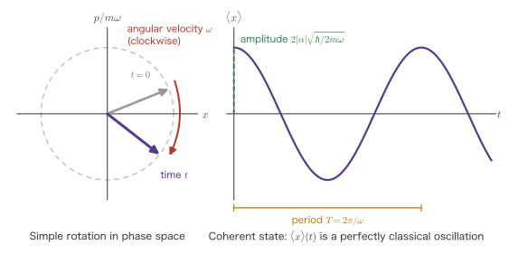
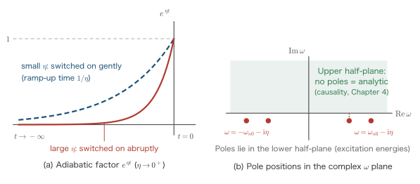

Chapter 6The Three Pictures and the Time-Evolution Operator
Here Part III begins. The intuition we built in Part I through the classical damped oscillator—the response function, causality, and poles in the complex plane—we now carry over to quantum systems unchanged. Our goal is the Kubo formula of Chapter 7, and this chapter is the one in which we gather the toolkit for it.
The content of the toolkit is, to put it plainly, nothing but the question “where do we put $\ee^{-\ii\Ham t/\hbar}$?” In quantum mechanics, time evolution is expressed by a single unitary operator, $\ee^{-\ii\Ham t/\hbar}$. We can attach this operator to the states (the Schrödinger picture), attach it to the operators (the Heisenberg picture), or split it in two and assign one part to the states and the other part to the operators (the interaction picture). These are the “three pictures.” The physics does not change at all. What changes is only the clarity of the calculation. Incidentally, many Japanese texts translate the English word “picture” as “byōzō” (roughly “image”); this book, following the Japanese chapter title, consistently calls it “hyōji” (roughly “representation”).
Now, why do we bother to prepare as many as three of them? The Hamiltonian treated in linear response theory always has the form
$$ \Ham = \Ham_0 + \Ham_1(t) $$Here $\Ham_0$ describes the system before we kick it (this is the main part, and usually complicated), and $\Ham_1(t)$ is a weak perturbation applied from outside (this is the small part). What we want to know is only the effect of $\Ham_1$. In the Schrödinger picture, however, the state also carries the violent time variation due to $\Ham_0$, so the effect of $\Ham_1$, which is the very thing we care about, gets buried. We therefore subtract the motion due to $\Ham_0$ in advance—this is the interaction picture, the most important invention of this chapter. In the language of engineering it is the variation of constants, and in the language of NMR it is the rotating frame.
Having done so, we write down the time evolution due to $\Ham_1$ as an operator $\hat U(t,t_0)$ and expand it in powers of $\Ham_1$ (the Dyson series). Here an unfamiliar symbol appears: the time-ordered product $T$. The mechanism that produces the factor $1/n!$ is merely an integration technique, namely “regarding a triangular integration region as half of a square,” but the symbol $T$ itself is a convention for preserving the order of the operators—that is, their noncommutativity—and is not a technique. In this chapter we settle both points thoroughly, with figures.
- The definitions of the Schrödinger, Heisenberg, and interaction pictures, and the fact that the three give the same physics
- Deriving the Heisenberg equation $\ii\hbar\,\dd\hat A_H/\dd t=[\hat A_H,\Ham]$ by differentiation alone
- Computing the harmonic oscillator explicitly in the Heisenberg picture, and seeing that $\hat x_H(t)$ has exactly the same form as the classical solution
- That, in the interaction picture, the $\Ham_0$ terms cancel cleanly, so that only $\Ham_1$ drives the motion of the state
- The definition, unitarity, group property, and integral equation of the time-evolution operator $\hat U(t,t_0)$
- The Dyson series by successive substitution, and how the time-ordered product $T$ produces $1/n!$ (with figures)
- That the noncommutativity of the operators is essential, and the explicit form of $[\hat x_H(t_1),\hat x_H(t_2)]$
- Adiabatic switching $\ee^{\eta t}$, and the $\omega+\ii\eta$ that emerges from it (its correspondence with the analyticity in the upper half-plane of Chapter 4)
- What the Gell-Mann–Low theorem asserts, and how to handle the phase factor
6.1 The Schrödinger Picture — The States Move
6.1.1 The fundamental equation
The form in which we first learn quantum mechanics is the Schrödinger picture. The state vector $\ket{\psi_S(t)}$ moves with time, while the operator $\hat A_S$ stands still. The subscript $S$ stands for Schrödinger; below we attach it, as a rule, to distinguish the pictures. In places where the subscript would make an equation heavy, however, we omit it. By convention, an operator without a subscript is the Schrödinger-picture operator.
Definition: The Schrödinger picture
The state vector obeys the Schrödinger equation
$$ \begin{equation} \ii\hbar\,\frac{\partial}{\partial t}\ket{\psi_S(t)} = \Ham\,\ket{\psi_S(t)} \label{eq:6-schrodinger} \end{equation} $$and evolves in time accordingly. The operator $\hat A_S$ does not depend on time (except when a time dependence is introduced from outside).
When $\Ham$ does not depend on time, Eq. \eqref{eq:6-schrodinger} can be integrated formally to give
This $\ee^{-\ii\Ham t/\hbar}$, the “exponential of an operator,” governs almost everything in this chapter. First we check carefully what it is.
6.1.2 What is the exponential of an operator?
Definition: The exponential of an operator
For an operator $\hat X$ we define
$$ \begin{equation} \ee^{\hat X} \equiv \sum_{n=0}^{\infty}\frac{1}{n!}\hat X^{\,n} = \hat 1 + \hat X + \frac{1}{2!}\hat X^2 + \frac{1}{3!}\hat X^3 + \cdots \label{eq:6-expdef} \end{equation} $$That is, we define it by a power series. Here $\hat X^{\,0}=\hat 1$ (the identity operator).
Derivation: Eq. \eqref{eq:6-Sevol} satisfies the Schrödinger equation
Setting $\hat X = -\ii\Ham t/\hbar$ and writing out the definition \eqref{eq:6-expdef}, we get
$$ \ee^{-\ii\Ham t/\hbar} = \sum_{n=0}^{\infty}\frac{1}{n!}\left(\frac{-\ii}{\hbar}\right)^{n}\Ham^{\,n}\,t^{n} $$Only $t^n$ depends on $t$ (we assumed that $\Ham$ does not depend on time). We may therefore differentiate term by term, which gives
$$ \frac{\dd}{\dd t}\ee^{-\ii\Ham t/\hbar} = \sum_{n=1}^{\infty}\frac{n\,t^{n-1}}{n!}\left(\frac{-\ii}{\hbar}\right)^{n}\Ham^{\,n} $$The $n=0$ term is a constant, so it has dropped out. Using $n/n! = 1/(n-1)!$, we further factor out one copy of the prefactor together with one factor of the Hamiltonian by writing $\left(\frac{-\ii}{\hbar}\right)^n\Ham^n = \left(\frac{-\ii}{\hbar}\Ham\right)\left(\frac{-\ii}{\hbar}\right)^{n-1}\Ham^{\,n-1}$. Since $\Ham$ commutes with its own powers, it does not matter whether we factor it out to the left or to the right.
$$ = \left(-\frac{\ii}{\hbar}\Ham\right)\sum_{n=1}^{\infty}\frac{t^{n-1}}{(n-1)!}\left(\frac{-\ii}{\hbar}\right)^{n-1}\Ham^{\,n-1} $$Now relabel $m = n-1$, and the sum returns exactly to the original exponential function:
$$ \begin{equation} \frac{\dd}{\dd t}\ee^{-\ii\Ham t/\hbar} = -\frac{\ii}{\hbar}\Ham\,\ee^{-\ii\Ham t/\hbar} = -\frac{\ii}{\hbar}\,\ee^{-\ii\Ham t/\hbar}\,\Ham \label{eq:6-dexp} \end{equation} $$Therefore, differentiating both sides of Eq. \eqref{eq:6-Sevol} with respect to $t$ and multiplying by $\ii\hbar$, we obtain
$$ \ii\hbar\frac{\partial}{\partial t}\ket{\psi_S(t)} = \ii\hbar\left(-\frac{\ii}{\hbar}\Ham\right)\ee^{-\ii\Ham t/\hbar}\ket{\psi_S(0)} = \Ham\ket{\psi_S(t)} $$∎ Indeed, the Schrödinger equation \eqref{eq:6-schrodinger} has been reproduced.
Common Error: $\ee^{\hat A}\ee^{\hat B}=\ee^{\hat A+\hat B}$ does not hold
The identity $\ee^{a}\ee^{b}=\ee^{a+b}$, which is taken for granted for exponentials of numbers, does not hold for operators in general. Expanding $\ee^{\hat A}\ee^{\hat B}$ produces terms with the factors in the order $\hat A\hat B$, whereas expanding $\ee^{\hat A+\hat B}$ produces $\frac{1}{2}(\hat A\hat B+\hat B\hat A)$. The two agree only when $[\hat A,\hat B]=0$.
More precisely, the Baker–Campbell–Hausdorff (BCH) formula (Appendix A) reads
$$ \ee^{\hat A}\ee^{\hat B}=\exp\left(\hat A+\hat B+\tfrac12[\hat A,\hat B]+\tfrac{1}{12}[\hat A,[\hat A,\hat B]]-\tfrac{1}{12}[\hat B,[\hat A,\hat B]]+\cdots\right) $$The reason the time-ordered product $T$ becomes necessary in the latter half of this chapter comes down, in the end, to this one fact. For now, we ask only that you keep in mind that “exponentials do not straightforwardly turn into addition.”
Note, however, that $\ee^{-\ii\Ham t_1/\hbar}\,\ee^{-\ii\Ham t_2/\hbar}=\ee^{-\ii\Ham(t_1+t_2)/\hbar}$ does hold, because the same $\Ham$ commutes with itself.
6.1.3 Unitarity and conservation of probability
Write $\hat S(t)\equiv\ee^{-\ii\Ham t/\hbar}$. Since $\Ham$ is Hermitian ($\Ham^\dagger=\Ham$),
$$ \hat S(t)^\dagger = \left(\sum_n\frac{1}{n!}\left(\frac{-\ii t}{\hbar}\right)^n\Ham^{\,n}\right)^{\!\dagger} = \sum_n\frac{1}{n!}\left(\frac{+\ii t}{\hbar}\right)^n(\Ham^\dagger)^{n} = \ee^{+\ii\Ham t/\hbar} $$(the sign is reversed because $(\ii)^*=-\ii$, and $(\Ham^n)^\dagger=(\Ham^\dagger)^n=\Ham^n$). Therefore
$$ \hat S(t)^\dagger\hat S(t) = \ee^{\ii\Ham t/\hbar}\ee^{-\ii\Ham t/\hbar}=\ee^{0}=\hat 1 $$so $\hat S(t)$ is a unitary operator. Hence
$$ \braket{\psi_S(t)|\psi_S(t)} =\bra{\psi_S(0)}\hat S^\dagger\hat S\ket{\psi_S(0)} =\braket{\psi_S(0)|\psi_S(0)} $$That is, the total probability is conserved. This may seem obvious, but if it failed, particles would disappear or appear out of nowhere. Whenever we construct $\hat U$ from here on, too, the first thing we check is unitarity.
Example: Expanding in energy eigenstates
Let $\Ham\ket{n}=E_n\ket{n}$ and expand the initial state as $\ket{\psi_S(0)}=\sum_n c_n\ket{n}$. Since $\Ham^{\,m}\ket{n}=E_n^{\,m}\ket{n}$, acting with the series of the exponential function term by term gives
$$ \ee^{-\ii\Ham t/\hbar}\ket{n}=\sum_m\frac{1}{m!}\left(\frac{-\ii t}{\hbar}\right)^m E_n^{\,m}\ket{n}=\ee^{-\ii E_n t/\hbar}\ket{n} $$That is,
$$ \ket{\psi_S(t)}=\sum_n c_n\,\ee^{-\ii E_n t/\hbar}\ket{n} $$Only the phase of each component rotates, at a rate proportional to $E_n$. Since $\abs{c_n}^2$ does not change, the probability of measuring a given energy does not depend on time. However, because the phase rotates differently for each level, a quantity such as $\braket{\hat x}$ shows beats of the form $\ee^{-\ii(E_n-E_m)t/\hbar}$, that is, at the difference frequency. This difference frequency $\omega_{nm}=(E_n-E_m)/\hbar$ will keep playing the leading role from here on.
6.2 The Heisenberg Picture — The Operators Move
6.2.1 Only expectation values can be measured
Let us step back for a moment. What an experiment gives us is not the state vector itself but the expectation value of a physical quantity:
$$ \braket{A}(t) \equiv \bra{\psi_S(t)}\hat A_S\ket{\psi_S(t)} $$Let us substitute Eq. \eqref{eq:6-Sevol} into this expression. The ket picks up $\ee^{-\ii\Ham t/\hbar}$ and the bra picks up its Hermitian conjugate $\ee^{+\ii\Ham t/\hbar}$, so
$$ \braket{A}(t) = \bra{\psi_S(0)}\underbrace{\ee^{\ii\Ham t/\hbar}\,\hat A_S\,\ee^{-\ii\Ham t/\hbar}}_{\text{treat this as a single block}}\ket{\psi_S(0)} $$We have merely changed where the parentheses go. But if we regard this “single block” as a new operator, we obtain an entirely different picture.
Definition: The Heisenberg picture
Define the operator and the state by
$$ \begin{equation} \hat A_H(t) \equiv \ee^{\ii\Ham t/\hbar}\,\hat A_S\,\ee^{-\ii\Ham t/\hbar}, \qquad \ket{\psi_H}\equiv\ket{\psi_S(0)} \label{eq:6-Hdef} \end{equation} $$The state $\ket{\psi_H}$ is independent of time. All of the time evolution is carried by the operator.
The meaning of this switch
In the Schrödinger picture, “the measuring apparatus is fixed and the system moves.” In the Heisenberg picture, “the system is fixed and the measuring apparatus moves.” It is like the difference between looking at the scenery from inside a train and looking at the train from outside. If the relative motion is the same, the phenomena we see are the same. Indeed,
$$ \braket{A}(t)=\bra{\psi_S(t)}\hat A_S\ket{\psi_S(t)}=\bra{\psi_H}\hat A_H(t)\ket{\psi_H} $$so the expectation value comes out the same whichever picture we use to compute it. This is only natural, since we have merely switched viewpoints.
Then why do we go to the trouble of using the Heisenberg picture? Because the response function is written as a “correlation of operators at two different times.” The formula that appears in Chapter 7
$$ \chi^R_{AB}(t-t')=-\frac{\ii}{\hbar}\theta(t-t')\braket{[\hat A_H(t),\hat B_H(t')]} $$has operators at two times, $t$ and $t'$, standing side by side. In a picture in which the state moves, this form cannot even be written down. Only when the operators carry time labels does the phrasing of Chapter 1—“kick at time $t'$ and listen to the reply at time $t$”—become a mathematical formula.
6.2.2 Deriving the Heisenberg equation by differentiation
Derivation: The Heisenberg equation
Differentiate both sides of the definition, Eq. \eqref{eq:6-Hdef}, with respect to $t$. Using the product rule (which holds for operators as well, as long as we do not change their order), there are two places to differentiate, namely the exponential functions on the left and on the right:
$$ \frac{\dd\hat A_H}{\dd t} =\left(\frac{\dd}{\dd t}\ee^{\ii\Ham t/\hbar}\right)\hat A_S\,\ee^{-\ii\Ham t/\hbar} +\ee^{\ii\Ham t/\hbar}\,\hat A_S\left(\frac{\dd}{\dd t}\ee^{-\ii\Ham t/\hbar}\right) $$Substitute Eq. \eqref{eq:6-dexp} and its sign-reversed counterpart $\frac{\dd}{\dd t}\ee^{\ii\Ham t/\hbar}=\frac{\ii}{\hbar}\Ham\ee^{\ii\Ham t/\hbar}$:
$$ =\frac{\ii}{\hbar}\Ham\,\underbrace{\ee^{\ii\Ham t/\hbar}\hat A_S\,\ee^{-\ii\Ham t/\hbar}}_{=\,\hat A_H(t)} -\frac{\ii}{\hbar}\,\underbrace{\ee^{\ii\Ham t/\hbar}\hat A_S\,\ee^{-\ii\Ham t/\hbar}}_{=\,\hat A_H(t)}\,\Ham $$Here we used the fact that $\Ham$ commutes with $\ee^{\pm\ii\Ham t/\hbar}$ (in the second term we passed $\Ham$ through the exponential to its right side). Each of the two underbraced parts is then the definition itself, that is, $\hat A_H(t)$:
$$ \frac{\dd\hat A_H}{\dd t}=\frac{\ii}{\hbar}\left(\Ham\hat A_H(t)-\hat A_H(t)\Ham\right) =-\frac{\ii}{\hbar}\left[\hat A_H(t),\Ham\right] $$Multiplying both sides by $\ii\hbar$, we obtain
∎ This is the Heisenberg equation.
Supplement: If $\hat A_S$ itself depends explicitly on time (for example, an operator that contains a time-varying external field), there is one more place to differentiate, and we obtain
$$ \ii\hbar\frac{\dd\hat A_H}{\dd t}=[\hat A_H,\Ham]+\ii\hbar\,\ee^{\ii\Ham t/\hbar}\frac{\partial\hat A_S}{\partial t}\ee^{-\ii\Ham t/\hbar} $$In this chapter, unless stated otherwise, we take $\partial\hat A_S/\partial t=0$.
Notation Note: $\Ham_H=\Ham_S=\Ham$
Transferring the Hamiltonian itself to the Heisenberg picture gives
$$ \Ham_H(t)=\ee^{\ii\Ham t/\hbar}\Ham\,\ee^{-\ii\Ham t/\hbar}=\Ham $$so it is independent of time, because $\Ham$ commutes with its own exponential. Therefore $\Ham$ needs no picture subscript. This is why the $\Ham$ on the right-hand side of Eq. \eqref{eq:6-heisenbergeq} is written without a subscript.
Note, however, that this holds only when $\Ham$ does not depend on time. For $\Ham=\Ham(t)$ we can have $\Ham_H(t)\ne\Ham_S(t)$. This will matter when we deal with $\Ham_1(t)$ from Section 6.4 on.
Physical Meaning: What is a conserved quantity?
Eq. \eqref{eq:6-heisenbergeq} has the same form as the classical-mechanics Poisson-bracket equation $\dd A/\dd t=\{A,H\}$ (the correspondence is $\{\,,\,\}\leftrightarrow\frac{1}{\ii\hbar}[\,,\,]$). It can then be read as saying that if $\hat A$ commutes with $\Ham$, then $\hat A_H$ is independent of time—that is, it is a conserved quantity.
For example, in a system with translational symmetry the momentum commutes with $\Ham$, so $\hat{\bm p}_H(t)=\hat{\bm p}$. In a rotationally symmetric system the angular momentum is conserved. In the uniform electron gas treated from Chapter 9 on, the total momentum $\hat{\bm P}=\sum_i\hat{\bm p}_i$ is a conserved quantity.
Note, however, that we should not regard this translational symmetry as the basis of the $f$-sum rule (Chapter 8). The $f$-sum rule follows from the double commutator $[[\hat A,\Ham_0],\hat A]$, and as long as the interaction is independent of velocity, it depends neither on the details of the interaction nor on translational symmetry—which is exactly why it can be applied to an isolated atom as well in Chapter 8. Momentum conservation comes into play rather in the situation where, as $q\to0$, the plasmon uses up almost all of the sum rule (Chapter 11).
6.2.3 Commutation relations are preserved
Even after we move to the Heisenberg picture, the commutation relations at equal times do not change. Indeed,
$$ \begin{aligned} [\hat x_H(t),\hat p_H(t)] &= \ee^{\ii\Ham t/\hbar}\hat x\,\ee^{-\ii\Ham t/\hbar}\ee^{\ii\Ham t/\hbar}\hat p\,\ee^{-\ii\Ham t/\hbar} - (\text{$\hat x\leftrightarrow\hat p$})\\[2pt] &= \ee^{\ii\Ham t/\hbar}\left(\hat x\hat p-\hat p\hat x\right)\ee^{-\ii\Ham t/\hbar} = \ee^{\ii\Ham t/\hbar}(\ii\hbar)\,\ee^{-\ii\Ham t/\hbar}=\ii\hbar \end{aligned} $$Along the way we used $\ee^{-\ii\Ham t/\hbar}\ee^{\ii\Ham t/\hbar}=\hat 1$ to collapse the middle. At the end, since $\ii\hbar$ is just a number (a c-number), it commutes with the exponential, and the exponentials cancel through $\ee^{\ii\Ham t/\hbar}\ee^{-\ii\Ham t/\hbar}=\hat 1$.
Fine at equal times, but entirely different at different times
What we have just shown is the commutation relation at the same time. The commutator at different times, $[\hat A_H(t_1),\hat B_H(t_2)]$, generally takes a completely different value, and it is precisely this that plays the leading role in linear response theory. In Section 6.7 we compute it explicitly for the harmonic oscillator and see that its value is exactly the Green's function of Chapter 2.
6.3 Example: Solving the Harmonic Oscillator in the Heisenberg Picture
Enough of abstract arguments; let us now work through an actual example by hand. The harmonic oscillator is one of the few examples in which the operator equation of motion can be solved all the way through, and the result coincides exactly with the classical solution. In this section we work throughout in the Heisenberg picture. We want to confirm here that the intuition built in Chapters 2 and 3 carries over unchanged to quantum systems. For how the state moves in the Schrödinger picture, see the example in Section 6.1.3 (general eigenstate expansion); the same oscillator treated in the interaction picture appears in Section 6.4.2 and Example 6.3, so that the three pictures can be compared side by side.
6.3.1 Preparation — the creation and annihilation operators
The Hamiltonian of the one-dimensional harmonic oscillator is
$$ \Ham_0=\frac{\hat p^2}{2m}+\frac12 m\omega^2\hat x^2 =\hbar\omega\left(\hat a^\dagger\hat a+\frac12\right) $$Here we have
$$ \begin{equation} \hat x=\sqrt{\frac{\hbar}{2m\omega}}\left(\hat a+\hat a^\dagger\right), \qquad \hat p=\ii\sqrt{\frac{m\hbar\omega}{2}}\left(\hat a^\dagger-\hat a\right), \qquad [\hat a,\hat a^\dagger]=1 \label{eq:6-xp-a} \end{equation} $$(By the convention of Section 6.1.1, operators written without a picture subscript, such as $\hat a$, $\hat a^\dagger$ or $\hat x$, $\hat p$, are Schrödinger-picture operators.) We write the number operator as $\hat n=\hat a^\dagger\hat a$.
6.3.2 $\hat a_H(t)$ in the Heisenberg picture — two ways to find it
Method 1: Solving the Heisenberg equation
Insert $\hat A=\hat a$ into Eq. \eqref{eq:6-heisenbergeq}. First we compute the commutator we need. Using $[\hat a,\hat a^\dagger]=1$, we obtain
$$ [\hat a,\hat n]=[\hat a,\hat a^\dagger\hat a] =[\hat a,\hat a^\dagger]\hat a+\hat a^\dagger[\hat a,\hat a] =1\cdot\hat a+0=\hat a $$(we used $[\hat A,\hat B\hat C]=[\hat A,\hat B]\hat C+\hat B[\hat A,\hat C]$). Since the constant term $\frac12\hbar\omega$ does not affect the commutator,
$$ [\hat a,\Ham_0]=\hbar\omega[\hat a,\hat n]=\hbar\omega\,\hat a $$This relation holds unchanged in the Heisenberg picture as well. It suffices to sandwich both sides between $\ee^{\ii\Ham_0t/\hbar}\cdots\ee^{-\ii\Ham_0t/\hbar}$, and since $\Ham_0$ is unchanged by the sandwiching,
$$ [\hat a_H(t),\Ham_0]=\hbar\omega\,\hat a_H(t) $$Hence the Heisenberg equation is
$$ \ii\hbar\frac{\dd\hat a_H}{\dd t}=\hbar\omega\,\hat a_H \quad\Longleftrightarrow\quad \frac{\dd\hat a_H}{\dd t}=-\ii\omega\,\hat a_H $$This is just an ordinary first-order linear differential equation. There is no need to worry about the fact that these are operators, because no product of operators appears on the right-hand side. Solving it under the initial condition $\hat a_H(0)=\hat a$, we obtain
(The second is simply the Hermitian conjugate of the first.) ∎
Method 2: Going back to the definition and expanding (a check)
Let us compute directly from the definition \eqref{eq:6-Hdef}. Here we use the following identity (Appendix A, a corollary of the BCH formula):
$$ \ee^{\hat B}\hat A\,\ee^{-\hat B}=\hat A+[\hat B,\hat A]+\frac{1}{2!}\big[\hat B,[\hat B,\hat A]\big]+\frac{1}{3!}\Big[\hat B,\big[\hat B,[\hat B,\hat A]\big]\Big]+\cdots $$Now $\hat B=\ii\Ham_0 t/\hbar=\ii\omega t\,(\hat n+\tfrac12)$ and $\hat A=\hat a$. The constant $\tfrac12$ does not affect the commutator. From $[\hat a,\hat n]=\hat a$ found above we have $[\hat n,\hat a]=-\hat a$, so
$$ [\hat B,\hat a]=\ii\omega t\,[\hat n,\hat a]=-\ii\omega t\,\hat a $$That is, each time we take a commutator with $\hat B$, one more factor of the coefficient $(-\ii\omega t)$ is simply multiplied on. The double and triple commutators are likewise
$$ [\hat B,[\hat B,\hat a]]=(-\ii\omega t)^2\hat a,\qquad [\hat B,[\hat B,[\hat B,\hat a]]]=(-\ii\omega t)^3\hat a,\ \cdots $$Therefore
$$ \ee^{\ii\Ham_0t/\hbar}\hat a\,\ee^{-\ii\Ham_0t/\hbar} =\left(\sum_{n=0}^\infty\frac{(-\ii\omega t)^n}{n!}\right)\hat a =\ee^{-\ii\omega t}\,\hat a $$∎ This agrees with Eq. \eqref{eq:6-aH}. Method 1 is overwhelmingly easier, but it is worth verifying once that the result follows directly from the definition.
6.3.3 $\hat x_H(t)$ has exactly the same form as the classical solution
Derivation: $\hat x_H(t)=\hat x\cos\omega t+\dfrac{\hat p}{m\omega}\sin\omega t$
Move $\hat x$ of Eq. \eqref{eq:6-xp-a} to the Heisenberg picture. Since $\ee^{\ii\Ham_0t/\hbar}(\cdots)\ee^{-\ii\Ham_0t/\hbar}$ is a linear operation, it suffices to apply Eq. \eqref{eq:6-aH} to $\hat a$ and $\hat a^\dagger$ separately:
$$ \hat x_H(t)=\sqrt{\frac{\hbar}{2m\omega}}\left(\hat a\,\ee^{-\ii\omega t}+\hat a^\dagger\,\ee^{\ii\omega t}\right) $$Now we substitute Euler's formula $\ee^{\pm\ii\omega t}=\cos\omega t\pm\ii\sin\omega t$ and rearrange:
$$ \begin{aligned} \hat a\,\ee^{-\ii\omega t}+\hat a^\dagger\,\ee^{\ii\omega t} &=\hat a(\cos\omega t-\ii\sin\omega t)+\hat a^\dagger(\cos\omega t+\ii\sin\omega t)\\[2pt] &=\underbrace{(\hat a+\hat a^\dagger)}_{\text{proportional to $\hat x$}}\cos\omega t +\ii\underbrace{(\hat a^\dagger-\hat a)}_{\text{proportional to $\hat p$}}\sin\omega t \end{aligned} $$We have merely regrouped the $\hat a$ terms and the $\hat a^\dagger$ terms into the part containing $\cos$ and the part containing $\sin$. From Eq. \eqref{eq:6-xp-a},
$$ \sqrt{\frac{\hbar}{2m\omega}}(\hat a+\hat a^\dagger)=\hat x, \qquad \sqrt{\frac{\hbar}{2m\omega}}\cdot\ii(\hat a^\dagger-\hat a) =\frac{1}{m\omega}\cdot\underbrace{\ii\sqrt{\frac{m\hbar\omega}{2}}(\hat a^\dagger-\hat a)}_{=\ \hat p} =\frac{\hat p}{m\omega} $$(for the second we used $\sqrt{\hbar/2m\omega}=\frac{1}{m\omega}\sqrt{m\hbar\omega/2}$). Therefore
Computing in the same way for $\hat p$ (Exercise 6.1), we obtain
$$ \begin{equation} \hat p_H(t)=\hat p\cos\omega t-m\omega\,\hat x\sin\omega t \label{eq:6-pH} \end{equation} $$∎
Physical Meaning: This is the classical solution itself
In classical mechanics, solving $m\ddot x=-m\omega^2x$ under the initial conditions $x(0)=x_0$, $p(0)=p_0$ gives
$$ x(t)=x_0\cos\omega t+\frac{p_0}{m\omega}\sin\omega t $$This is literally identical in form to Eq. \eqref{eq:6-xH}. The only difference is whether $x_0,p_0$ are numbers or operators.
This is no accident. The Heisenberg equation \eqref{eq:6-heisenbergeq} has the same form as Hamilton's canonical equations, and since for the harmonic oscillator the equations are linear, the fact that we are dealing with operators never shows up anywhere in the calculation. In a linear system, quantum-mechanical operators move exactly like classical variables (the clearest form of Ehrenfest's theorem).
This fact bridges Part I and Part III of this book. The picture built up for the damped oscillator in Chapters 2 and 3—resonance, phase lag, energy dissipation—carries over unchanged to the quantum harmonic oscillator. This is the first real example of the claim of this book that if you understand the classical damped oscillator, you understand the Kubo formula.

Example 6.1: Expectation value in a coherent state
Find $\braket{\hat x_H(t)}$ in the coherent state satisfying $\hat a\ket{\alpha}=\alpha\ket{\alpha}$ ($\alpha=\abs{\alpha}\ee^{\ii\theta}$ is a complex number).
Solution. In the Heisenberg picture the state does not move, so we simply take the expectation value with $\ket{\psi_H}=\ket{\alpha}$ left as it is.
$$ \braket{\hat x_H(t)}=\sqrt{\frac{\hbar}{2m\omega}}\bra{\alpha}\left(\hat a\,\ee^{-\ii\omega t}+\hat a^\dagger\ee^{\ii\omega t}\right)\ket{\alpha} $$Using $\hat a\ket{\alpha}=\alpha\ket{\alpha}$ and its Hermitian conjugate $\bra{\alpha}\hat a^\dagger=\alpha^*\bra{\alpha}$, we obtain
$$ =\sqrt{\frac{\hbar}{2m\omega}}\left(\alpha\,\ee^{-\ii\omega t}+\alpha^*\ee^{\ii\omega t}\right) =\sqrt{\frac{\hbar}{2m\omega}}\cdot 2\abs{\alpha}\cos(\omega t-\theta) $$In the last step we substituted $\alpha=\abs{\alpha}\ee^{\ii\theta}$ and used $\ee^{\ii(\theta-\omega t)}+\ee^{-\ii(\theta-\omega t)}=2\cos(\omega t-\theta)$. ∎
This is a perfect harmonic oscillation without damping. $\abs{\alpha}$ determines the amplitude and $\theta$ determines the initial phase. In the limit $\abs{\alpha}\to\infty$ (strong excitation) it becomes the classical limit.
6.3.4 A numerical example — vibration of the carbon monoxide molecule
Example 6.2: Size of the zero-point oscillation of the CO molecule
The stretching vibration of carbon monoxide, CO, is observed at the wavenumber $\tilde\nu=2143\ \mathrm{cm^{-1}}$. The reduced mass is $\mu=\dfrac{12\times16}{12+16}=6.86\ \mathrm{u}=1.139\times10^{-26}\ \mathrm{kg}$.
(1) Angular frequency and period.
$$ \omega=2\pi c\tilde\nu=2\pi\times(2.998\times10^{10}\ \mathrm{cm/s})\times(2143\ \mathrm{cm^{-1}})=4.04\times10^{14}\ \mathrm{s^{-1}} $$ $$ T=\frac{2\pi}{\omega}=1.56\times10^{-14}\ \mathrm{s}=15.6\ \mathrm{fs} $$(2) Energy quantum. $\hbar\omega=1.055\times10^{-34}\times4.04\times10^{14}=4.26\times10^{-20}\ \mathrm{J}=0.266\ \mathrm{eV}$. This is 10 times the room-temperature value $k_BT=0.026\ \mathrm{eV}$, so at room temperature the molecule is almost 100 % in the vibrational ground state.
(3) Spread of the zero-point oscillation. We compute $\braket{\hat x^2}$ in the ground state $\ket{0}$. Since $\hat x^2=\frac{\hbar}{2\mu\omega}(\hat a+\hat a^\dagger)^2$ and $\bra{0}(\hat a+\hat a^\dagger)^2\ket{0}=\bra{0}\hat a\hat a^\dagger\ket{0}=1$,
$$ \sqrt{\braket{\hat x^2}}=\sqrt{\frac{\hbar}{2\mu\omega}} =\sqrt{\frac{1.055\times10^{-34}}{2\times1.139\times10^{-26}\times4.04\times10^{14}}} =3.4\times10^{-12}\ \mathrm{m}=3.4\ \mathrm{pm} $$This is about 3 % of the CO bond length, $113\ \mathrm{pm}$. The picture “the atoms are almost at rest, but not completely at rest” can be seen in numbers.
(4) What is happening in the Heisenberg picture. In the ground state $\braket{\hat x_H(t)}=0$ (insert $\braket{\hat x}=\braket{\hat p}=0$ into Eq. \eqref{eq:6-xH}). The expectation value does not move, but the operator rotates with a period of $15.6\ \mathrm{fs}$. The correlation $\braket{\hat x_H(t)\hat x_H(t')}$ of this “moving operator” at two different times gives the response function and the fluctuations in Chapters 7 and 8. Even when the expectation value is zero, the correlation is not zero—this is the starting point of the fluctuation–dissipation theorem.
6.4 The Interaction Picture — Extracting Only the Perturbation
6.4.1 Why it is needed
Now we come to the heart of this chapter. In linear response theory we split the Hamiltonian into two parts,
where $\Ham_0$ is the system before we kick it (independent of time) and $\Ham_1(t)$ is the weak perturbation applied from outside. In Chapter 7 it will take a form such as $\Ham_1(t)=\int\dd^3x\,\phi(\xx,t)\hat\rho(\xx)$.
Why is the Schrödinger picture inconvenient?
The state $\ket{\psi_S(t)}$ in the Schrödinger picture moves under the effects of both $\Ham_0$ and $\Ham_1$. But the motion due to $\Ham_0$—for example, the phase of an eigenstate rotating as $\ee^{-\ii E_nt/\hbar}$—is a motion that we already know and are not interested in. Moreover, its rate of rotation is $E_n/\hbar$, which at the atomic scale is ferociously fast, of the order of $10^{15}\ \mathrm{s^{-1}}$.
On the other hand, the effect of $\Ham_1$ is “weak,” so it produces only slow, small changes. A slow, unknown change rides on top of a ferociously fast, known motion—in this situation we want to extract only the unknown part.
The solution is simple. We only have to subtract the known motion in advance. This is the interaction picture.
Restatement in the language of engineering
- Variation of constants. To solve the ordinary differential equation $\dot y = ay + \epsilon g(t)y$, we put $y=\ee^{at}u(t)$ and derive the equation $\dot u=\epsilon g(t)u$ for $u$. The factor $\ee^{at}$ corresponds to $\ee^{-\ii\Ham_0t/\hbar}$, and $u$ corresponds to $\ket{\psi_I}$. The interaction picture is the method of variation of constants itself.
- Rotating frame. In NMR, to eliminate the Larmor precession ($\sim10^8\ \mathrm{Hz}$) caused by the static magnetic field $B_0$, one switches to a coordinate system that rotates at that frequency. Since the radio-frequency wave is applied in resonance with this Larmor frequency, its fast oscillation drops out in the rotating frame, and only the effect of the slow nutation ($\gamma B_1/2\pi\sim10^4\ \mathrm{Hz}$) caused by the weak radio-frequency magnetic field $B_1$ remains, which makes the situation easy to see. Here $\Ham_0$ is the static magnetic field and $\Ham_1$ is the radio-frequency wave.
- Envelope detection. This corresponds to the operation of taking a signal modulated by a carrier, dropping the carrier, and extracting only the envelope.
6.4.2 Definition
Definition: The interaction picture ($I$ picture)
Suppose that $\Ham_0$ is independent of time. We define the state and the operators by
$$ \begin{equation} \ket{\psi_I(t)}\equiv\ee^{\ii\Ham_0t/\hbar}\ket{\psi_S(t)}, \qquad \hat A_I(t)\equiv\ee^{\ii\Ham_0t/\hbar}\,\hat A_S\,\ee^{-\ii\Ham_0t/\hbar} \label{eq:6-Idef} \end{equation} $$In particular, we write the perturbation itself, transferred to the interaction picture, as follows:
$$ \begin{equation} \Ham_{1I}(t)\equiv\ee^{\ii\Ham_0t/\hbar}\,\Ham_1(t)\,\ee^{-\ii\Ham_0t/\hbar} \label{eq:6-H1I} \end{equation} $$That is how we write it.
$\Ham_{1I}(t)$ has two kinds of time dependence
The $t$ dependence in Eq. \eqref{eq:6-H1I} comes from two places.
- Explicit time dependence: $\Ham_1(t)$ itself depends on time (for example, the external field oscillates).
- Implicit time dependence: the dependence that arises from sandwiching between $\ee^{\pm\ii\Ham_0t/\hbar}$. This is the internal motion of the system generated by $\Ham_0$.
For example, if $\Ham_1(t)=-F(t)\hat x$ (an external force is applied to an oscillator), then
$$ \Ham_{1I}(t)=-F(t)\,\hat x_I(t) =-F(t)\sqrt{\frac{\hbar}{2m\omega}}\left(\hat a\,\ee^{-\ii\omega t}+\hat a^\dagger\ee^{\ii\omega t}\right) $$so that both the oscillation of the external field $F(t)$ and the internal oscillation $\ee^{\pm\ii\omega t}$ of the system enter. Resonance occurs when these two frequencies coincide. This is the same structure as the forced oscillation of Chapter 3.
Note also that $\hat x_I(t)$ is evolved by $\Ham_0$ alone, so it is the same as the Heisenberg picture in a world where $\Ham_1$ does not exist. This fact will matter in an essential way in Chapter 7.
6.4.3 Equation of motion of the state — how $\Ham_0$ cancels
Derivation: $\ii\hbar\partial_t\ket{\psi_I}=\Ham_{1I}(t)\ket{\psi_I}$
We differentiate the first equation of the definition \eqref{eq:6-Idef} with respect to $t$. The product rule gives two terms:
$$ \frac{\partial}{\partial t}\ket{\psi_I(t)} =\left(\frac{\partial}{\partial t}\ee^{\ii\Ham_0t/\hbar}\right)\ket{\psi_S(t)} +\ee^{\ii\Ham_0t/\hbar}\frac{\partial}{\partial t}\ket{\psi_S(t)} $$The first term, by Eq. \eqref{eq:6-dexp} with the opposite sign, is $\dfrac{\ii}{\hbar}\Ham_0\ee^{\ii\Ham_0t/\hbar}\ket{\psi_S(t)}$.
For the second term we use $\Ham=\Ham_0+\Ham_1(t)$ in the Schrödinger equation \eqref{eq:6-schrodinger}, which gives $\dfrac{\partial}{\partial t}\ket{\psi_S}=-\dfrac{\ii}{\hbar}(\Ham_0+\Ham_1(t))\ket{\psi_S}$.
Multiplying both sides by $\ii\hbar$ and collecting terms, we obtain
$$ \ii\hbar\frac{\partial}{\partial t}\ket{\psi_I(t)} =\underbrace{-\Ham_0\,\ee^{\ii\Ham_0t/\hbar}\ket{\psi_S}}_{(\mathrm{A})} +\underbrace{\ee^{\ii\Ham_0t/\hbar}\Ham_0\ket{\psi_S}}_{(\mathrm{B})} +\ee^{\ii\Ham_0t/\hbar}\Ham_1(t)\ket{\psi_S} $$Here is the crux. $\Ham_0$ commutes with $\ee^{\ii\Ham_0t/\hbar}$, so we can pass the $\Ham_0$ in (B) to the left of the exponential function:
$$ (\mathrm{B})=\ee^{\ii\Ham_0t/\hbar}\Ham_0\ket{\psi_S}=\Ham_0\,\ee^{\ii\Ham_0t/\hbar}\ket{\psi_S}=-(\mathrm{A}) $$That is, (A) and (B) cancel each other exactly. This is the whole of the interaction picture. What remains is
$$ \ii\hbar\frac{\partial}{\partial t}\ket{\psi_I(t)}=\ee^{\ii\Ham_0t/\hbar}\Ham_1(t)\ket{\psi_S(t)} $$Finally, we rewrite the right-hand side in terms of $\ket{\psi_I}$. We insert $\hat 1=\ee^{-\ii\Ham_0t/\hbar}\ee^{\ii\Ham_0t/\hbar}$ between $\Ham_1(t)$ and $\ket{\psi_S}$:
$$ \ee^{\ii\Ham_0t/\hbar}\Ham_1(t)\ket{\psi_S} =\underbrace{\ee^{\ii\Ham_0t/\hbar}\Ham_1(t)\ee^{-\ii\Ham_0t/\hbar}}_{=\,\Ham_{1I}(t)} \underbrace{\ee^{\ii\Ham_0t/\hbar}\ket{\psi_S}}_{=\,\ket{\psi_I(t)}} $$Therefore
∎
What Eq. \eqref{eq:6-Ieq} says
Compare it with the Schrödinger equation \eqref{eq:6-schrodinger}. The form is exactly the same; only $\Ham$ has been replaced by $\Ham_{1I}(t)$. In other words,
The state in the interaction picture obeys a Schrödinger equation whose Hamiltonian is the perturbation $\Ham_1$ alone.
In particular, if $\Ham_1=0$ then $\partial_t\ket{\psi_I}=0$; that is, $\ket{\psi_I}$ does not move at all. The motion of $\ket{\psi_I(t)}$ is 100 % due to the perturbation. The goal (to extract only the perturbation) has been achieved completely.
Moreover, if $\Ham_1$ is small, the change in $\ket{\psi_I}$ is also small, so this is the ideal form for expanding in powers of $\Ham_1$ (that is, for doing perturbation theory). We carry this out from Section 6.5 on.
6.4.4 Equation of motion of an operator
The equation of motion of $\hat A_I(t)$ is obtained simply by replacing $\Ham\to\Ham_0$ in the derivation of Section 6.2.2. The steps of the derivation are exactly the same, so we write only the result:
“Operators move under $\Ham_0$, and states move under $\Ham_1$”—this is the slogan of the interaction picture. The work is divided between the two.
6.4.5 Comparison of the three pictures
| Schrödinger picture | Heisenberg picture | Interaction picture | |
|---|---|---|---|
| State | $\ket{\psi_S(t)}$ (moves) | $\ket{\psi_H}=\ket{\psi_S(0)}$ (fixed) | $\ket{\psi_I(t)}=\ee^{\ii\Ham_0t/\hbar}\ket{\psi_S(t)}$ |
| Operator | $\hat A_S$ (fixed) | $\hat A_H(t)=\ee^{\ii\Ham t/\hbar}\hat A_S\ee^{-\ii\Ham t/\hbar}$ | $\hat A_I(t)=\ee^{\ii\Ham_0t/\hbar}\hat A_S\ee^{-\ii\Ham_0t/\hbar}$ |
| Equation for the state | $\ii\hbar\partial_t\ket{\psi_S}=\Ham\ket{\psi_S}$ | $\partial_t\ket{\psi_H}=0$ | $\ii\hbar\partial_t\ket{\psi_I}=\Ham_{1I}\ket{\psi_I}$ |
| Equation for the operator | $\dd\hat A_S/\dd t=0$ | $\ii\hbar\,\dd\hat A_H/\dd t=[\hat A_H,\Ham]$ | $\ii\hbar\,\dd\hat A_I/\dd t=[\hat A_I,\Ham_0]$ |
| What moves the state | $\Ham_0+\Ham_1$ | None | $\Ham_1$ only |
| What moves the operator | None | $\Ham_0+\Ham_1$ | $\Ham_0$ only |
| When $\Ham_1=0$ | — | Coincides with the interaction picture | Coincides with the Heisenberg picture |
| At $t=0$ | All three coincide ($\ket{\psi_S(0)}=\ket{\psi_H}=\ket{\psi_I(0)}$, $\hat A_S=\hat A_H(0)=\hat A_I(0)$) | ||
| Main use | Definitions and fundamental equations | Definition of the response function (Chapters 7 and 8) | Perturbation expansion and Dyson series (Chapters 6 and 7) |
Expectation values are the same in every picture
In the interaction picture, too, the expectation value does not change. Indeed,
$$ \bra{\psi_I(t)}\hat A_I(t)\ket{\psi_I(t)} =\bra{\psi_S(t)}\ee^{-\ii\Ham_0t/\hbar}\,\ee^{\ii\Ham_0t/\hbar}\hat A_S\ee^{-\ii\Ham_0t/\hbar}\,\ee^{\ii\Ham_0t/\hbar}\ket{\psi_S(t)} =\bra{\psi_S(t)}\hat A_S\ket{\psi_S(t)} $$and all the exponential functions we sandwiched in cancel each other. The choice of picture is a matter of computational convenience, not of physics. If you are in doubt, just write down the expectation value and check “where the exponential functions are attached.”
The finite-temperature case (a note for Chapter 13)
In this chapter we have written the discussion in terms of a pure state $\ket{\psi}$, but at finite temperature one uses the density matrix $\hat\rho$ and defines the expectation value as $\braket{\hat A}=\Tr[\hat\rho\,\hat A]$. In the equilibrium state, $\hat\rho_0=\ee^{-\beta\Ham_0}/\Tr\,\ee^{-\beta\Ham_0}$. The discussion of the pictures carries over unchanged, and, for example,
$$ \braket{\hat A_H(t)}=\Tr\left[\hat\rho_0\,\ee^{\ii\Ham t/\hbar}\hat A_S\ee^{-\ii\Ham t/\hbar}\right] $$holds. The cyclicity of $\Tr$, $\Tr[\hat X\hat Y]=\Tr[\hat Y\hat X]$, corresponds to “the sandwiched exponential functions cancel” in the pure-state case. In Chapter 13, by reading $\ee^{-\beta\Ham_0}$ as “the time-evolution operator for imaginary time $\tau=\ii t$,” we reuse the tools of this chapter wholesale.
6.5 The Time-Evolution Operator $\hat U(t,t_0)$
6.5.1 Definition and differential equation
Because $\Ham_{1I}(t)$ depends on time, the solution of Eq. \eqref{eq:6-Ieq} cannot be written as $\ee^{-\ii\Ham_{1I}t/\hbar}$ (recall the box “Common Error” in Section 6.1.2). So we simply define the solution formally as an operator.
Definition: The time-evolution operator (interaction picture)
The operator that carries the state at time $t_0$ to the state at time $t$ is written $\hat U(t,t_0)$:
$$ \begin{equation} \ket{\psi_I(t)}=\hat U(t,t_0)\,\ket{\psi_I(t_0)} \label{eq:6-Udef} \end{equation} $$Substituting this into Eq. \eqref{eq:6-Ieq}, and using the fact that $\ket{\psi_I(t_0)}$ is arbitrary, we see that
holds.
Place $\Ham_{1I}(t)$ to the left of $\hat U$
It is important that $\Ham_{1I}(t)$ stands to the left of $\hat U$ in Eq. \eqref{eq:6-Ueq}. Operators do not commute, so writing $\hat U\Ham_{1I}$ would give a different equation. This rule, “the factor at the later time goes on the left,” will be observed throughout what follows. The time-ordered product of Section 6.6 is also a generalization of this rule.
6.5.2 Unitarity
Derivation: $\hat U^\dagger\hat U=\hat 1$
Take the Hermitian conjugate of Eq. \eqref{eq:6-Ueq}. Noting that $(\ii)^*=-\ii$ and $\Ham_{1I}^\dagger=\Ham_{1I}$ (the perturbation is also a physical quantity, and hence Hermitian), we obtain
$$ -\ii\hbar\,\frac{\partial}{\partial t}\hat U^\dagger(t,t_0)=\hat U^\dagger(t,t_0)\,\Ham_{1I}(t) $$(note that taking the Hermitian conjugate of a product reverses the order). Next we compute the time derivative of $\hat U^\dagger\hat U$:
$$ \frac{\partial}{\partial t}\left(\hat U^\dagger\hat U\right) =\left(\frac{\partial\hat U^\dagger}{\partial t}\right)\hat U+\hat U^\dagger\left(\frac{\partial\hat U}{\partial t}\right) $$Putting the two equations in the forms $\partial_t\hat U^\dagger=\frac{\ii}{\hbar}\hat U^\dagger\Ham_{1I}$ and $\partial_t\hat U=-\frac{\ii}{\hbar}\Ham_{1I}\hat U$ and substituting, we get
$$ =\frac{\ii}{\hbar}\hat U^\dagger\Ham_{1I}\hat U-\frac{\ii}{\hbar}\hat U^\dagger\Ham_{1I}\hat U=0 $$The two terms have exactly the same form and differ only in sign, so they cancel. Therefore $\hat U^\dagger\hat U$ is a constant independent of time. Since $\hat U^\dagger(t_0,t_0)\hat U(t_0,t_0)=\hat 1$ at $t=t_0$, for all $t$ we have
∎ That is, $\hat U$ is unitary, and probability is conserved. We have $\hat U^{-1}=\hat U^\dagger$.
6.5.3 Group property
Theorem: Group property
$$ \begin{equation} \hat U(t_2,t_1)\,\hat U(t_1,t_0)=\hat U(t_2,t_0), \qquad \hat U(t_0,t)=\hat U^{-1}(t,t_0)=\hat U^\dagger(t,t_0) \label{eq:6-group} \end{equation} $$There is no restriction on the ordering of the times. $t_1$ need not lie between $t_0$ and $t_2$.
Derivation
Regarding both sides as functions of $t_2$, we show that they satisfy the same differential equation and the same initial condition.
Left-hand side: Since $\hat U(t_1,t_0)$ is a constant operator that does not depend on $t_2$, differentiating with respect to $t_2$ gives
$$ \ii\hbar\frac{\partial}{\partial t_2}\left[\hat U(t_2,t_1)\hat U(t_1,t_0)\right] =\left[\Ham_{1I}(t_2)\hat U(t_2,t_1)\right]\hat U(t_1,t_0) =\Ham_{1I}(t_2)\left[\hat U(t_2,t_1)\hat U(t_1,t_0)\right] $$Right-hand side: $\ii\hbar\partial_{t_2}\hat U(t_2,t_0)=\Ham_{1I}(t_2)\hat U(t_2,t_0)$.
Both are first-order linear equations of the same form. Furthermore, if we set $t_2=t_1$, the left-hand side becomes $\hat U(t_1,t_1)\hat U(t_1,t_0)=\hat 1\cdot\hat U(t_1,t_0)=\hat U(t_1,t_0)$, and the right-hand side is also $\hat U(t_1,t_0)$, so the two agree. A first-order ordinary differential equation has a unique solution once the initial value is fixed, so the two sides are equal for all $t_2$.
The second equation follows from setting $t_2=t_0$ in the first, which gives $\hat U(t_0,t_1)\hat U(t_1,t_0)=\hat U(t_0,t_0)=\hat 1$. ∎
Physical Meaning
“Evolve from $t_0$ to $t_1$, and then from $t_1$ to $t_2$” is the same as “evolve from $t_0$ to $t_2$ in one go”—we have merely written an obvious fact as an equation. Yet we will use Eq. \eqref{eq:6-group} repeatedly later, when we split up $\hat U(\infty,-\infty)=\hat U(\infty,0)\hat U(0,-\infty)$ and the like (Section 6.9).
Also, $\hat U(t_0,t)=\hat U^\dagger(t,t_0)$ means that “running time backward = taking the Hermitian conjugate.” It expresses the fact that time evolution in quantum mechanics is reversible.
6.5.4 Converting to an integral equation
Derivation: The integral equation
Integrate both sides of the differential equation, Eq. \eqref{eq:6-Ueq}, from $t_0$ to $t$. We write the integration variable as $t'$:
$$ \ii\hbar\int_{t_0}^{t}\dd t'\,\frac{\partial}{\partial t'}\hat U(t',t_0) =\int_{t_0}^{t}\dd t'\,\Ham_{1I}(t')\,\hat U(t',t_0) $$The integral on the left-hand side can be carried out directly by the fundamental theorem of calculus, giving
$$ \ii\hbar\left[\hat U(t,t_0)-\hat U(t_0,t_0)\right]=\ii\hbar\left[\hat U(t,t_0)-\hat 1\right] $$Here we used the initial condition $\hat U(t_0,t_0)=\hat 1$. Dividing both sides by $\ii\hbar$ and rearranging, we obtain
∎
Why convert to an integral equation?
Since the right-hand side of Eq. \eqref{eq:6-integraleq} also contains the $\hat U$ that we want to find, it is not yet a solution as it stands. However, two points are decisive: the initial condition is built into the equation, and the $\hat U$ on the right-hand side is multiplied by a single factor of $\Ham_{1I}$.
Thanks to the latter, each time we substitute Eq. \eqref{eq:6-integraleq} itself into the $\hat U$ on the right-hand side (successive substitution), the order in $\Ham_{1I}$ goes up by one. If $\Ham_{1I}$ is small, this expansion gives a sequence of good approximations. This is the Dyson series of the next section.
We used the same trick in the section on Green's functions in Chapter 2. “Convert the differential equation into an integral equation and then substitute successively” is a standard device of perturbation theory.
6.6 Successive Substitution and the Dyson Series
6.6.1 Carrying out the successive substitution
Derivation: Zeroth, first, and second order
Zeroth order. Ignoring the second term on the right-hand side of Eq. \eqref{eq:6-integraleq}, we obtain $\hat U\simeq\hat 1$. This is the obvious result that, without a perturbation, the state in the interaction picture does not move.
First order. Substitute the zeroth-order answer $\hat 1$ for $\hat U(t',t_0)$ on the right-hand side:
$$ \hat U(t,t_0)\simeq\hat 1-\frac{\ii}{\hbar}\int_{t_0}^{t}\dd t_1\,\Ham_{1I}(t_1) $$We have renamed the integration variable $t'\to t_1$.
Second order. This time we substitute the first-order answer for $\hat U(t',t_0)$ on the right-hand side. Here we must be careful: the names of the integration variables must not overlap. In Eq. \eqref{eq:6-integraleq}, replacing $t\to t_1$ and using $t_2$ as the integration variable, we have
$$ \hat U(t_1,t_0)=\hat 1-\frac{\ii}{\hbar}\int_{t_0}^{t_1}\dd t_2\,\Ham_{1I}(t_2)\,\hat U(t_2,t_0) $$Substituting this into Eq. \eqref{eq:6-integraleq} gives
$$ \hat U(t,t_0)=\hat 1-\frac{\ii}{\hbar}\int_{t_0}^{t}\dd t_1\,\Ham_{1I}(t_1) \left[\hat 1-\frac{\ii}{\hbar}\int_{t_0}^{t_1}\dd t_2\,\Ham_{1I}(t_2)\hat U(t_2,t_0)\right] $$Expanding, and setting the innermost $\hat U\to\hat 1$, we obtain the expression through second order:
∎ Likewise, the $n$th-order term
$$ \hat U^{(n)}=\left(-\frac{\ii}{\hbar}\right)^{n}\int_{t_0}^{t}\!\dd t_1\int_{t_0}^{t_1}\!\dd t_2\cdots\int_{t_0}^{t_{n-1}}\!\dd t_n\; \Ham_{1I}(t_1)\Ham_{1I}(t_2)\cdots\Ham_{1I}(t_n) $$is obtained.
How to Read This Equation: The time ordering is fixed
The range of integration of the second-order term in Eq. \eqref{eq:6-iterate} is nested, $t_0\le t_2\le t_1\le t$ (the upper limit of $t_2$ is $t_1$), and the operators are ordered as $\Ham_{1I}(t_1)\Ham_{1I}(t_2)$; in other words, the later time ($t_1$) is on the left.
This is natural physically, because it expresses the causal order “first we kick once at time $t_2$, and then we kick a second time at time $t_1$.” Since operators act on the ket one after another from the right, what happens earlier in time is placed further to the right.
The problem is that this nested range of integration is awkward to handle. At $n$th order it is nested $n$ levels deep, and we can neither change variables nor factorize. This is where the following technique comes in.
6.6.2 Turning the triangle into half a square
This is the place in this chapter where one is most likely to stumble. Fetter–Walecka dispose of it in a few lines, but we will do it carefully.
Derivation: Symmetrization of the second-order term
To shorten the notation, we write $\hat h(t)\equiv\Ham_{1I}(t)$ and define the second-order integral as
$$ I_2\equiv\int_{t_0}^{t}\dd t_1\int_{t_0}^{t_1}\dd t_2\;\hat h(t_1)\hat h(t_2) $$The integration region is the triangle on the lower side ($t_1>t_2$) of the diagonal $t_1=t_2$ within the square $[t_0,t]\times[t_0,t]$ in the $(t_1,t_2)$ plane. This is shown in Figure 6.3(a).
Step 1: Swapping the names of the integration variables. Since $I_2$ is a definite integral, its value does not change whatever we call the integration variables. Exchanging only the names, $t_1\leftrightarrow t_2$, we obtain
$$ I_2=\int_{t_0}^{t}\dd t_2\int_{t_0}^{t_2}\dd t_1\;\hat h(t_2)\hat h(t_1) $$Now the integration region is $t_2>t_1$, that is, the triangle on the upper side of the diagonal (Figure 6.3(b)). The operator ordering has also changed to $\hat h(t_2)\hat h(t_1)$, so the rule that the later time is on the left is still respected.
Step 2: Interchanging the order of integration. The expression of Step 1 has the order “first $t_1$ from $t_0$ to $t_2$, then $t_2$ from $t_0$ to $t$.” We rearrange this into “first $t_2$, then $t_1$.” Looking at the region $\{t_0\le t_1\le t_2\le t\}$ with $t_1$ as the reference, $t_1$ runs from $t_0$ to $t$, and for each $t_1$, $t_2$ runs from $t_1$ to $t$:
$$ I_2=\int_{t_0}^{t}\dd t_1\int_{t_1}^{t}\dd t_2\;\hat h(t_2)\hat h(t_1) $$(The integration region itself has not changed; we have only changed how we slice it.)
Step 3: Adding the two expressions. Adding the original $I_2$ and the $I_2$ of Step 2 gives $2I_2$:
$$ 2I_2=\int_{t_0}^{t}\dd t_1\left[\int_{t_0}^{t_1}\dd t_2\,\hat h(t_1)\hat h(t_2)+\int_{t_1}^{t}\dd t_2\,\hat h(t_2)\hat h(t_1)\right] $$Look inside the square brackets. The range of integration of $t_2$ is $[t_0,t_1]$ in the first half and $[t_1,t]$ in the second half, which together make up exactly the whole of $[t_0,t]$. However, the operator ordering in the integrand differs between the first and second halves. We therefore introduce the following notation.
Definition: Time-ordered product ($T$-product)
$$ \begin{equation} T\left[\hat h(t_1)\hat h(t_2)\right]\equiv \begin{cases} \hat h(t_1)\hat h(t_2) & (t_1>t_2)\\[2pt] \hat h(t_2)\hat h(t_1) & (t_2>t_1) \end{cases} \label{eq:6-Tdef} \end{equation} $$That is, it is the operation of “rearranging so that the later time stands on the left.” Using the step function, we can write
$$ T[\hat h(t_1)\hat h(t_2)]=\theta(t_1-t_2)\hat h(t_1)\hat h(t_2)+\theta(t_2-t_1)\hat h(t_2)\hat h(t_1) $$in a single line.
With this notation, the content of the square brackets is exactly $T[\hat h(t_1)\hat h(t_2)]$. In the first half $t_2$ is smaller than $t_1$, so the $T$-product is $\hat h(t_1)\hat h(t_2)$; in the second half $t_2>t_1$, so the $T$-product is $\hat h(t_2)\hat h(t_1)$. This agrees exactly with Definition \eqref{eq:6-Tdef}. Therefore
$$ 2I_2=\int_{t_0}^{t}\dd t_1\int_{t_0}^{t}\dd t_2\;T\left[\hat h(t_1)\hat h(t_2)\right] $$Dividing both sides by 2, we get
∎ The nested range of integration has become two independent integrals (a square). The price is that the symbol $T$ and the factor $1/2!$ have been attached.
Advice from Prof. Takao Kotani: The $T$-product is a computational technique, not the physical substance
Let us pause here for a moment. To put it in a word, just to be sure, $T$ is nothing more than the instruction “take the string of operators lined up to its right and rearrange it so that the later times come to the left.” There is nothing more to it. That said, the $T$-product is convenient, but perturbation theory can be written down in full without using $T$. The evidence lies in this very section. The symbol $T$ does not appear anywhere in Eq. \eqref{eq:6-iterate}, obtained by the successive substitution in Section 6.6.1, or in its generalization to $n$th order. This is because the range of integration $t>t_1>t_2>\cdots>t_n>t_0$ itself specifies the order, and with this the perturbation expansion is already complete. The $T$-product is a notation for folding this nesting into a single exponential function (the $T$-exponential function, which we derive in the next subsection), and the price is that we must attach time labels to the Hamiltonian and carry the convention “the later time on the left” with us to the very end. Dividing the time into steps $t_0<t_1<\cdots<t_N=t$ and using the group property \eqref{eq:6-group}, we have
$$ \hat U(t,t_0)=\lim_{N\to\infty}\; \ee^{-\frac{\ii}{\hbar}\Ham_{1I}(t_N)\Delta t}\cdots \ee^{-\frac{\ii}{\hbar}\Ham_{1I}(t_2)\Delta t}\, \ee^{-\frac{\ii}{\hbar}\Ham_{1I}(t_1)\Delta t} \qquad\left(\Delta t=\frac{t-t_0}{N}\right) $$Viewed in this discretized form, we can see with our own eyes that all $T$ does is give the instruction “respect this ordering.” Therefore, when we stated at the beginning of this chapter that “$T$ is not a technique,” what we meant, precisely, was the ordering itself—the noncommutativity of the operators. The ordering is physics, but the operation of folding it into the single letter $T$ is a computational technique.
More generally, the computational techniques such as the Green's function method, the $T$-product, and Feynman diagrams should be kept separate from the physical substance—what is responding to what. A technique is a tool for producing answers; it is not the physics itself. Beginners tend to mistake the complexity of the tools for the complexity of the physics, but what remains to the very end of this book is the one consistent sentence that has run since Chapter 1—we kick the system from the outside with $f(t)$ and watch the change in $\braket{\hat A}$.
—The above is based on advice received from Prof. Takao Kotani, the developer of the QSGW method (personal communication, August 2026).
6.6.3 Generalization to $n$th order and the Dyson series
Derivation: The $n$th-order term
The $n$th-order term
$$ I_n=\int_{t_0}^{t}\!\dd t_1\int_{t_0}^{t_1}\!\dd t_2\cdots\int_{t_0}^{t_{n-1}}\!\dd t_n\;\hat h(t_1)\hat h(t_2)\cdots\hat h(t_n) $$has as its integration region the “ordered” region $t_0\le t_n\le\cdots\le t_2\le t_1\le t$. The $n$ variables can be ordered by size in $n!$ ways, and each of these defines one ordered region. The $n!$ ordered regions partition the hypercube $[t_0,t]^n$ without overlap (apart from boundaries of measure zero).
By exactly the same argument as in the second-order case—if we permute the names of the variables, the integral over any ordered region takes the same value once the $T$-product is inserted—the value of the integral is the same over all $n!$ regions. Therefore
$$ \begin{equation} I_n=\frac{1}{n!}\int_{t_0}^{t}\!\dd t_1\int_{t_0}^{t}\!\dd t_2\cdots\int_{t_0}^{t}\!\dd t_n\; T\left[\hat h(t_1)\hat h(t_2)\cdots\hat h(t_n)\right] \label{eq:6-In} \end{equation} $$Here $T$ is the operation of “rearranging the $n$ operators from left to right in order of decreasing time, latest first.” ∎
Theorem: The Dyson series and the $T$-exponential
$$ \begin{equation} \hat U(t,t_0)=\sum_{n=0}^{\infty}\frac{1}{n!}\left(-\frac{\ii}{\hbar}\right)^{n} \int_{t_0}^{t}\!\dd t_1\cdots\int_{t_0}^{t}\!\dd t_n\; T\left[\Ham_{1I}(t_1)\cdots\Ham_{1I}(t_n)\right] \label{eq:6-dyson} \end{equation} $$Since each term has the form $\frac{1}{n!}(\text{same integral})^n$, by analogy with the series of the exponential function, $\ee^{x}=\sum x^n/n!$, we abbreviate this as
This is called the time-ordered exponential ($T$-exponential).
$T\exp$ is not a “genuine exponential function”
Eq. \eqref{eq:6-Texp} is nothing more than a shorthand for Eq. \eqref{eq:6-dyson}. You must not drop the $T$ and write $\exp[-\frac{\ii}{\hbar}\int\Ham_{1I}]$. The two agree only in the special case where the $\Ham_{1I}$ at all different times commute with one another (Section 6.7).
Also, since the $T$-product is an instruction to rearrange the operators and then integrate, we have $T[\hat A\hat B]\ne T[\hat A]\,T[\hat B]$. Keep in mind that $T$ is a symbol that acts on the whole product, not on the individual operators.
Note also that the $\Ham_1$ treated in this book is always built from an even number of fermion operators (for example, $\hat\psi^\dagger\hat\psi$). Therefore no sign arises when the $T$-product rearranges operators. For the $T$-product of fermion operators themselves (Chapter 13), care is needed, because the sign of the permutation, $(-1)^P$, appears.
6.6.4 Example: finding the transition probability with first-order perturbation theory
The first-order term of the Dyson series alone already lets us calculate a great deal. In fact, linear response theory is nothing other than “truncating the Dyson series at first order.” Let us now pause and carry the calculation through to concrete numerical values.
Example 6.3: Excitation of a harmonic oscillator by an external-force pulse
A harmonic oscillator (angular frequency $\omega$, mass $m$) was in the ground state $\ket{0}$ at $t=-\infty$. We apply a time-dependent external force $F(t)$. The perturbation is $\Ham_1(t)=-F(t)\,\hat x$. Within first-order perturbation theory, find the probability $P_{0\to1}$ that the oscillator is in the first excited state $\ket{1}$ at $t=+\infty$.
Solution. Step 1: Writing down $\Ham_{1I}$. As we saw in Section 6.4.2,
$$ \Ham_{1I}(t')=-F(t')\,\hat x_I(t')=-F(t')\sqrt{\frac{\hbar}{2m\omega}}\left(\hat a\,\ee^{-\ii\omega t'}+\hat a^\dagger\ee^{\ii\omega t'}\right) $$Step 2: Taking the matrix element. In the successive-substitution formula, Eq. \eqref{eq:6-iterate}, the $\ket{0}\to\ket{1}$ component of the first-order term is
$$ c_1=\bra{1}\hat U(\infty,-\infty)\ket{0}\simeq-\frac{\ii}{\hbar}\int_{-\infty}^{\infty}\dd t'\;\bra{1}\Ham_{1I}(t')\ket{0} $$(the zeroth-order term, $\bra{1}\hat 1\ket{0}=0$, drops out). From $\hat a\ket{0}=0$ and $\hat a^\dagger\ket{0}=\ket{1}$, we have $\bra{1}\hat a\ket{0}=0$ and $\bra{1}\hat a^\dagger\ket{0}=1$. Therefore
$$ \bra{1}\Ham_{1I}(t')\ket{0}=-F(t')\sqrt{\frac{\hbar}{2m\omega}}\;\ee^{\ii\omega t'} $$Step 3: Carrying out the integral.
$$ c_1=\frac{\ii}{\hbar}\sqrt{\frac{\hbar}{2m\omega}}\int_{-\infty}^{\infty}\dd t'\,F(t')\,\ee^{\ii\omega t'} =\frac{\ii}{\hbar}\sqrt{\frac{\hbar}{2m\omega}}\;F(\omega) $$Here we used the convention of Chapter 1, $F(\omega)=\int\dd t\,F(t)\ee^{\ii\omega t}$. In other words, the remaining integral is the Fourier transform of the external force evaluated at the frequency $\omega$ (= the natural frequency of the oscillator).
Step 4: The probability.
∎ Whether the oscillator is excited is determined not by the total power of the external force but only by the natural-frequency component, $F(\omega)$. This is the quantum version of what we stated for forced oscillation in Chapter 3: that “only the frequency component that is in resonance absorbs energy.”
Example 6.4: Looking at it numerically — Gaussian pulses and adiabaticity
In Example 6.3, let $F(t)=F_0\ee^{-t^2/2\sigma^2}$ (a Gaussian pulse of width $\sigma$). From the formula for the Gaussian integral (Appendix A),
$$ F(\omega)=F_0\int_{-\infty}^{\infty}\ee^{-t^2/2\sigma^2}\ee^{\ii\omega t}\dd t=F_0\,\sigma\sqrt{2\pi}\;\ee^{-\omega^2\sigma^2/2} $$Therefore, by Eq. \eqref{eq:6-P01},
$$ P_{0\to1}=\frac{2\pi F_0^2\sigma^2\,\ee^{-\omega^2\sigma^2}}{2m\hbar\omega} =\frac{\pi F_0^2\sigma^2}{m\hbar\omega}\,\ee^{-\omega^2\sigma^2} $$If the CO molecule of Example 6.2 ($\mu=1.139\times10^{-26}\ \mathrm{kg}$, $\omega=4.04\times10^{14}\ \mathrm{s^{-1}}$, period $15.6\ \mathrm{fs}$) is subjected to a pulse of $F_0=1.0\times10^{-9}\ \mathrm{N}$, we get $\pi F_0^2/(\mu\hbar\omega)=6.47\times10^{27}\ \mathrm{s^{-2}}$, and the following table results.
| Pulse width $\sigma$ | $\omega\sigma$ | $\ee^{-\omega^2\sigma^2}$ | $P_{0\to1}$ |
|---|---|---|---|
| $0.5\ \mathrm{fs}$ | $0.202$ | $0.960$ | $1.6\times10^{-3}$ |
| $1\ \mathrm{fs}$ | $0.404$ | $0.849$ | $5.5\times10^{-3}$ |
| $3\ \mathrm{fs}$ | $1.21$ | $0.229$ | $1.3\times10^{-2}$ |
| $10\ \mathrm{fs}$ | $4.04$ | $8.3\times10^{-8}$ | $5.4\times10^{-8}$ |
| $30\ \mathrm{fs}$ | $12.1$ | $3\times10^{-64}$ | $\sim10^{-63}$ |
What we can read off.
- In every case $P\ll1$. Therefore first-order perturbation theory (linear response) is a good approximation, and we may truncate the Dyson series.
- When the pulse width $\sigma$ exceeds $1/\omega\approx2.5\ \mathrm{fs}$ ($1/2\pi$ of the oscillation period of $15.6\ \mathrm{fs}$) and the pulse becomes slow, the excitation probability vanishes exponentially, following $\ee^{-\omega^2\sigma^2}$ ($10^{-8}$ at $\sigma=10\ \mathrm{fs}$ and $10^{-63}$ at $30\ \mathrm{fs}$). This is the adiabatic theorem. The statement that “if we switch the force on gently, the system stays in the ground state” emerges quantitatively in the form $\ee^{-\omega^2\sigma^2}$.
- This fact justifies the adiabatic switching $\ee^{\eta t}$ of Section 6.8 ($\eta\to0^+$, that is, infinitely slowly). As long as we switch the perturbation on slowly, no unwanted excitations occur. Note, however, that this exponential suppression works precisely because the energy difference $\hbar\omega$ to the excited state is finite. In a system with a gapless continuous spectrum, such as a metal, the suppression is more gradual, and there the order of limits discussed in Section 6.8.3 becomes essential.
6.7 Why Non-Commuting Operators Cause Trouble
6.7.1 If the operators commuted, everything would be simple
Suppose that all the $\Ham_{1I}$ at different times commute with one another, that is, $[\Ham_{1I}(t_1),\Ham_{1I}(t_2)]=0$ (for all $t_1,t_2$). Then reordering inside the $T$-product does nothing. We may therefore drop $T$ in Eq. \eqref{eq:6-dyson}, which gives
$$ \hat U(t,t_0)=\sum_n\frac{1}{n!}\left(-\frac{\ii}{\hbar}\int_{t_0}^{t}\Ham_{1I}\dd t'\right)^{\!n} =\exp\left[-\frac{\ii}{\hbar}\int_{t_0}^{t}\Ham_{1I}(t')\dd t'\right] $$an ordinary exponential function, and the story ends here. Conversely, the one and only reason we need the $T$-product is “that the operators do not commute.”
6.7.2 Example 1: applying a force to a harmonic oscillator
Derivation: Calculating $[\hat x_I(t_1),\hat x_I(t_2)]$
For $\Ham_1(t)=-F(t)\hat x$ we have $\Ham_{1I}(t)=-F(t)\hat x_I(t)$, and since $F$ is a number,
$$ \left[\Ham_{1I}(t_1),\Ham_{1I}(t_2)\right]=F(t_1)F(t_2)\left[\hat x_I(t_1),\hat x_I(t_2)\right] $$Now we calculate $[\hat x_I(t_1),\hat x_I(t_2)]$. Substituting $\hat x_I(t)=\sqrt{\hbar/2m\omega}\,(\hat a\ee^{-\ii\omega t}+\hat a^\dagger\ee^{\ii\omega t})$ and using bilinearity, we split it into four commutators:
$$ [\hat x_I(t_1),\hat x_I(t_2)]=\frac{\hbar}{2m\omega}\Big( \underbrace{[\hat a,\hat a]}_{=0}\ee^{-\ii\omega(t_1+t_2)} +[\hat a,\hat a^\dagger]\ee^{-\ii\omega t_1}\ee^{\ii\omega t_2} +[\hat a^\dagger,\hat a]\ee^{\ii\omega t_1}\ee^{-\ii\omega t_2} +\underbrace{[\hat a^\dagger,\hat a^\dagger]}_{=0}\ee^{\ii\omega(t_1+t_2)}\Big) $$Inserting $[\hat a,\hat a^\dagger]=1$ and $[\hat a^\dagger,\hat a]=-1$, we obtain
$$ =\frac{\hbar}{2m\omega}\left(\ee^{\ii\omega(t_2-t_1)}-\ee^{-\ii\omega(t_2-t_1)}\right) =\frac{\hbar}{2m\omega}\cdot 2\ii\sin\left[\omega(t_2-t_1)\right] $$(We used $\ee^{\ii\theta}-\ee^{-\ii\theta}=2\ii\sin\theta$.) Therefore
∎ In the last step we tidied up the sign with $\sin(-\theta)=-\sin\theta$.
This commutator is already a response function
Eq. \eqref{eq:6-xxcomm} is a c-number (not an operator, just a number). It does not depend on the state, so taking the expectation value leaves it unchanged. Now let us get a preview of the Kubo formula, which we derive in Chapter 7. The response of the displacement to $\Ham_1(t)=-F(t)\hat x$ takes the form
$$ \delta\braket{\hat x}(t)=\frac{\ii}{\hbar}\int_{-\infty}^{t}\dd t'\;\braket{\left[\hat x_H(t),\hat x_H(t')\right]}\,F(t') $$(we derive this in Chapter 7; the minus sign attached to $\Ham_1$ matters here). Here $\hat x_H$ is the operator evolved by the unperturbed $\Ham_0$ alone, that is, the same thing as $\hat x_I$ of Section 6.4.2. Substituting Eq. \eqref{eq:6-xxcomm}, we obtain
$$ \frac{\ii}{\hbar}\cdot\left(-\frac{\ii\hbar}{m\omega}\right)\sin\left[\omega(t-t')\right]=\frac{\sin\left[\omega(t-t')\right]}{m\omega} $$that is,
$$ \delta\braket{\hat x}(t)=\int_{-\infty}^{t}\frac{\sin\left[\omega(t-t')\right]}{m\omega}\,F(t')\,\dd t' $$This is nothing other than the Green's function of the damped oscillator found in Chapter 2, $G(t)=\frac{1}{m\omega_1}\ee^{-\gamma t/(2m)}\sin(\omega_1t)\,\theta(t)$, in the limit of vanishing damping $\gamma\to0$. We started from quantum theory, yet the answer that came back is the classical Green's function itself.
The harmonic oscillator is a linear system, so this is the result that “should come out this way.” Nevertheless, it is meaningful that the correspondence “commutator = classical Green's function” has become concretely visible. Half of the reason why a commutator appears in the Kubo formula is written right here.
6.7.3 Example 2: a spin in a rotating magnetic field
Example 6.5: The rotating magnetic field in NMR
Apply a static magnetic field (in the $z$ direction) and a rotating magnetic field to a spin $1/2$. Let the perturbation be $\Ham_1(t)=-\gamma B_1\left(\hat S_x\cos\omega t+\hat S_y\sin\omega t\right)$. Calculate the commutator at different times.
Solution. We abbreviate $\theta_i\equiv\omega t_i$. Expanding with $[\hat S_x,\hat S_y]=\ii\hbar\hat S_z$ and $[\hat S_x,\hat S_x]=[\hat S_y,\hat S_y]=0$, we obtain
$$ \begin{aligned} &\left[\hat S_x\cos\theta_1+\hat S_y\sin\theta_1,\ \hat S_x\cos\theta_2+\hat S_y\sin\theta_2\right]\\ &\quad=\cos\theta_1\sin\theta_2\,[\hat S_x,\hat S_y]+\sin\theta_1\cos\theta_2\,[\hat S_y,\hat S_x]\\ &\quad=\ii\hbar\hat S_z\left(\cos\theta_1\sin\theta_2-\sin\theta_1\cos\theta_2\right) =\ii\hbar\hat S_z\sin\left(\theta_2-\theta_1\right) \end{aligned} $$(In the last step we used the addition theorem $\sin(A-B)=\sin A\cos B-\cos A\sin B$.) Therefore
$$ \left[\Ham_1(t_1),\Ham_1(t_2)\right]=\ii\hbar\,\gamma^2B_1^2\,\hat S_z\,\sin\left[\omega(t_2-t_1)\right] $$∎ This is nonzero if $t_1\ne t_2$ (and $\omega(t_2-t_1)$ is not an integer multiple of $\pi$). Moreover, this time the operator $\hat S_z$ remains—it is not a c-number.
Physically, the direction of the magnetic field changes from moment to moment, so the final direction of the spin differs between “first rotating the spin with the field at $t_1$ and then with the field at $t_2$” and “reversing the order.” This is the same situation as the noncommutativity of rotations in three dimensions.
Special treatment when the commutator is a c-number
Unlike in Example 6.5, when the commutator is a c-number, as in Eq. \eqref{eq:6-xxcomm}, the Magnus expansion (or the BCH formula) terminates at second order, and we can write exactly
$$ T\exp\left[-\frac{\ii}{\hbar}\int_{t_0}^{t}\Ham_{1I}\dd t'\right] =\ee^{\ii\Phi}\,\exp\left[-\frac{\ii}{\hbar}\int_{t_0}^{t}\Ham_{1I}(t')\dd t'\right] $$($\Phi$ is a real phase determined by the double integral of the commutator). This is why the forced harmonic oscillator can be solved exactly. In a general many-body system, however, this does not happen. We must treat the $T$-product seriously.
6.8 Adiabatic Switching and $\ee^{\eta t}$
6.8.1 Why it is needed
The discussion so far still has a gap. We would like to say that “at $t=-\infty$ the system was in the ground state of $\Ham_0$,” but if $\Ham_1$ had been acting since $t=-\infty$, there would be no guarantee that the system is in the ground state to begin with. On the other hand, if we suddenly switch on $\Ham_1$ at some instant (a step-function-like switch-on), a violent transient response occurs at that moment, and the steady-state response can no longer be seen.
Example 6.4 has already shown us the solution. If we switch the perturbation on slowly, no unwanted excitations occur. So we replace the perturbation by
and call this $\ee^{\eta t}$ the adiabatic factor (also called the adiabatic switching factor).
The three roles of the adiabatic factor
- It guarantees the initial condition. Since $\ee^{\eta t}\to0$ as $t\to-\infty$, the perturbation vanishes, and the system is certainly in an eigenstate of $\Ham_0$.
- It makes the integral converge. The lower limit of $\int_{-\infty}^{t}\dd t'\,\ee^{\eta t'}(\cdots)$ converges. Without it, $\int_{-\infty}^t\ee^{-\ii\omega t'}\dd t'$ oscillates and is not well defined. The mathematical justification enters here.
- It builds causality into the equations. As we will see in the next subsection, $\eta$ ultimately remains in the response function in the form $\omega\to\omega+\ii\eta$ and pushes the poles into the lower half of the complex plane. The “analyticity in the upper half-plane” discussed in Chapters 1 and 4 follows from this.
The reciprocal $1/\eta$ of $\eta$ is “the time taken to switch the perturbation on.” The limit $\eta\to0^+$ means “switching it on infinitely slowly.” However, this switch-on is a hypothetical operation that exists only inside the equations, and it has nothing to do with the pulse width of the external field applied in an experiment. We emphasize this point again in Section 6.8.4.
6.8.2 How $\omega+\ii\eta$ appears in first-order perturbation theory
Derivation: First-order perturbation with the adiabatic factor
Consider a monochromatic perturbation $\Ham_1(t)=\hat B\,\ee^{-\ii\omega t}\,\ee^{\eta t}$ ($\hat B$ is a time-independent Hermitian operator). Let the eigenstates of $\Ham_0$ be $\Ham_0\ket{n}=E_n\ket{n}$, and let the initial state at $t=-\infty$ be the ground state $\ket{0}$.
One remark first. By itself, this $\Ham_1$ is not Hermitian ($\Ham_1^\dagger=\hat B\,\ee^{+\ii\omega t}\ee^{\eta t}\ne\Ham_1$). The physical perturbation that is actually applied is $\hat B\,\ee^{-\ii\omega t}\ee^{\eta t}+\text{h.c.}$ (h.c. stands for Hermitian conjugate). In first-order (linear) response, however, we may compute the contribution of each Fourier component separately and add them up, so below we follow only this first component. The contribution of the remaining h.c. component gives the second term of $\chi(\omega)$ that appears later (the antiresonant term).
Step 1: The matrix element of $\Ham_{1I}$. By the definition in Eq. \eqref{eq:6-H1I},
$$ \bra{n}\Ham_{1I}(t')\ket{0} =\bra{n}\ee^{\ii\Ham_0t'/\hbar}\hat B\,\ee^{-\ii\Ham_0t'/\hbar}\ket{0}\,\ee^{-\ii\omega t'}\ee^{\eta t'} $$The bra on the left produces $\ee^{\ii E_nt'/\hbar}$ and the ket on the right produces $\ee^{-\ii E_0t'/\hbar}$, so
$$ =B_{n0}\,\ee^{\ii(E_n-E_0)t'/\hbar}\,\ee^{-\ii\omega t'}\,\ee^{\eta t'} =B_{n0}\,\ee^{\ii\left(\omega_{n0}-\omega-\ii\eta\right)t'} $$Here we have put $B_{n0}\equiv\bra{n}\hat B\ket{0}$ and $\omega_{n0}\equiv(E_n-E_0)/\hbar$. Note that in combining the three exponential functions we rewrote $\ee^{\eta t'}=\ee^{\ii(-\ii\eta)t'}$.
Step 2: The time integration. Taking the first-order term of the Dyson series, we obtain
$$ c_n(t)=-\frac{\ii}{\hbar}B_{n0}\int_{-\infty}^{t}\dd t'\;\ee^{\ii\left(\omega_{n0}-\omega-\ii\eta\right)t'} $$The absolute value of the integrand is $\ee^{\eta t'}$, which converges to zero as $t'\to-\infty$. That is why the lower limit is well defined. Finding the antiderivative and substituting the limits, we obtain
$$ \int_{-\infty}^{t}\ee^{\ii\alpha t'}\dd t'=\left[\frac{\ee^{\ii\alpha t'}}{\ii\alpha}\right]_{-\infty}^{t}=\frac{\ee^{\ii\alpha t}}{\ii\alpha}, \qquad \alpha\equiv\omega_{n0}-\omega-\ii\eta $$Hence
$$ c_n(t)=-\frac{\ii}{\hbar}B_{n0}\frac{\ee^{\ii(\omega_{n0}-\omega)t}\ee^{\eta t}}{\ii\left(\omega_{n0}-\omega-\ii\eta\right)} =-\frac{B_{n0}}{\hbar}\cdot\frac{\ee^{\ii(\omega_{n0}-\omega)t}\,\ee^{\eta t}}{\omega_{n0}-\omega-\ii\eta} $$Tidying up the sign of the denominator, the final form is
∎
The meaning of $\omega+\ii\eta$ — correspondence with Chapter 4
Look closely at the denominator of Eq. \eqref{eq:6-cn}. The $\eta$ of the adiabatic factor shows up as the imaginary part of $\omega$: $\omega\longrightarrow\omega+\ii\eta$.
This replacement appears in every equation from Chapter 7 onward. The response function takes a form such as
$$ \chi(\omega)=\frac{1}{\hbar}\sum_n\left[\frac{\abs{B_{n0}}^2}{\omega+\ii\eta-\omega_{n0}}-\frac{\abs{B_{n0}}^2}{\omega+\ii\eta+\omega_{n0}}\right] $$(the Lehmann representation of Chapter 8). Looking at this function in the complex $\omega$ plane, we find that the poles are at $\omega=\pm\omega_{n0}-\ii\eta$, that is, slightly below the real axis. There are no poles in the upper half-plane. This is exactly the situation stated in Chapter 1, Section 1.4, and in Chapter 4 as “causality $\Longleftrightarrow$ analyticity in the upper half-plane.”
The physical prescription of adiabatic switching has been translated into a mathematical property, the location of the poles in the complex plane. This is the knot that ties this chapter to Chapters 4 and 5. The residue theorem learned in Chapter 5 is used to pick up these poles.

6.8.3 The size of $\eta$ and the order of limits
When to take $\eta\to0^+$ — mind the order of limits
The quantity $\eta$ is “an infinitesimal positive number,” and we must not set $\eta=0$ midway. The order that must be observed is
- First carry the calculation through to the end with a finite $\eta>0$ (so that the integrals converge)
- Take the thermodynamic limit (volume $V\to\infty$ and particle number $N\to\infty$ with $N/V$ fixed)
- Finally take $\eta\to0^+$
If the order is reversed, the spectrum, which was discrete in a finite system, does not become continuous, and the imaginary part of the response function (= dissipation) remains a comb of delta functions. Dissipation arises from the combination of infinitely many degrees of freedom and $\eta\to0^+$—this is an important point that we will discuss again in Chapter 8.
Note also that if we stop the calculation with $\eta$ left finite, the poles stay at a distance $\eta$ from the real axis, and the spectrum acquires Lorentzian tails of width $\eta$. This width merely indicates where the calculation was stopped; it is not the physical linewidth of the system. The two are extremely easy to confuse, so we sort them out squarely in the next box.
$\eta$ is not a relaxation rate — sorting out the roles
Most of the confusion surrounding $\eta$ comes from mixing up the following two things.
- $\eta$ = a mathematical convergence factor. Its roles are only the three listed in Section 6.8.1: (i) it guarantees the initial condition at $t\to-\infty$, (ii) it makes the time integral converge, and (iii) it drops the poles into the lower half-plane through $\omega\to\omega+\ii\eta$ and thereby builds analyticity in the upper half-plane = causality into the equations. And in the end we must always take $\eta\to0^+$. In a physical quantity that has been calculated correctly to the end, no $\eta$ whatsoever remains.
- The physical relaxation rate = a completely different quantity. A real excitation has a finite lifetime because of coupling to the environment and scattering. In the damped oscillator of Chapters 2 and 3, $\gamma$ was a dissipation term written into the equation of motion from the start. In many-body systems, electron–phonon scattering, electron–electron scattering, impurity scattering, and so on give the imaginary part $\mathrm{Im}\,\Sigma$ of the self-energy, and this becomes the linewidth (Chapter 7 onward). These remain, without vanishing, even when the limit $\eta\to0^+$ is taken.
The way to tell them apart is simple. What vanishes as $\eta\to0^+$ is a mathematical device; what remains is the physics. Both push the poles down below the real axis, so they look similar in a figure, but their origins are entirely different.
What complicates matters in practice is that, in numerical calculations, it is customary to take $\eta$ finite (for example $\hbar\eta=0.1\ \mathrm{eV}$) in order to smooth the spectrum. This is an expedient for turning discrete numerical data into a visible curve, and it does not amount to having calculated a physical linewidth. Adjusting $\eta$ to match an experimental linewidth is fitting, not prediction. We look at this concretely in the next example.
Example 6.6: How large should $\eta$ be in a numerical calculation?
Strictly speaking, $\eta\to0^+$. In real numerical calculations, however, we can handle only a finite number of $\kk$ points and a finite number of bands, so the excitation energies $\hbar\omega_{n0}$ take only a finite number of discrete values. If we leave $\eta=0$, $\mathrm{Im}\,\chi(\omega)$ becomes a comb of delta functions and cannot be drawn as a curve. So we take $\eta$ finite and broaden each delta function into a Lorentzian function of width $\eta$. How large, then, should it be?
As a guideline, the choice is sandwiched between two inequalities. Let $\Delta$ be the discrete spacing of the excitation energies obtained in the calculation, and let $W_{\text{phys}}$ be the width of the structure we want to see (the width of a plasmon peak, the onset of interband transitions, and so on). Then
If the left inequality is violated, the comb is not smoothed; if the right inequality is violated, the very structure we want to see is painted over.
Let us put in numbers. If we calculate a metal with bandwidth $W\sim10\ \mathrm{eV}$ using $32\times32\times32$ $\kk$ points, excitations are obtained for $N_k=3.3\times10^{4}$ points, so
$$ \Delta\sim\frac{W}{N_k}\sim\frac{10\ \mathrm{eV}}{3.3\times10^{4}}\sim0.3\ \mathrm{meV} $$On the other hand, the width of the plasmon peak we want to see is about $W_{\text{phys}}\sim1\ \mathrm{eV}$. Therefore
$$ 0.3\ \mathrm{meV}\;\ll\;\hbar\eta\;\ll\;1\ \mathrm{eV} \quad\Longrightarrow\quad \hbar\eta\sim10\text{–}100\ \mathrm{meV} $$is a reasonable choice. For an excitation with $\hbar\omega_{n0}=1\ \mathrm{eV}$ we have $\eta/\omega_{n0}\sim10^{-2}$, and the pole is, for practical purposes, “just below the real axis.” Increasing the number of $\kk$ points decreases $\Delta$, so $\eta$ can be made smaller still. The correct usage is to regard the calculation as converged once the spectrum stops changing when $\eta$ is made smaller.
Caution: We must not read this $\hbar\eta\sim0.1\ \mathrm{eV}$ as “having reproduced the experimentally observed linewidth of $0.1\ \mathrm{eV}$.” The values may happen to be close, but the $\eta$ of a numerical calculation is a quantity determined by the number of $\kk$ points, whereas the physical linewidth is a quantity determined by scattering processes. If we want to predict a linewidth, we must calculate $\mathrm{Im}\,\Sigma$ separately.
6.8.4 Conditions for linear response to apply — “fast” and “strong” are different things
Whenever the adiabatic factor comes up, almost invariably the following misunderstanding arises: “$\eta\to0^+$ is the limit of switching on the field slowly, so linear response theory cannot be applied to fast external fields such as femtosecond pulses, can it?” This is wrong. We knock the objection down point by point.
First, $\eta$ is not the pulse width of the external field. As we confirmed in Section 6.8.1, $\ee^{\eta t}$ is a device that translates the initial condition “the system was in equilibrium at $t\to-\infty$” into a formula and makes the time integral converge. The time waveform $f(t)$ of the external field that we apply in an experiment may be chosen freely, completely independently of $\eta$. And since we set $\eta$ to zero at the end, only $f(t)$ remains in the answer.
Second, the linear response to an arbitrary waveform can be written as a convolution with the retarded response function. The relation introduced in Chapter 1 and derived in Chapter 7 reads
No $\eta$ appears here. Even if $f(t)$ is a short pulse of width $\Delta t=10\ \mathrm{fs}$, this equation holds as it stands. Taking the Fourier transform gives $\delta A(\omega)=\chi^R_{AB}(\omega)f(\omega)$, and a short pulse has a broad bandwidth, $\Delta\omega\sim1/\Delta t$; that is, it simply kicks $\chi^R(\omega)$ at many frequencies at once. Being broadband does not mean being nonlinear. That a single weak pulse can measure the response function over a wide frequency range all at once is, if anything, an advantage of time-resolved spectroscopy.
Third, the real condition under which linear response breaks down is the “amplitude.” Whether the Dyson series, Eq. \eqref{eq:6-dyson}, may be truncated at first order is determined by whether the terms of second and higher order are small compared with the first-order term, that is, by whether the external field is weak. A rule of thumb is that “the energy that the external field imparts to the system is much smaller than the characteristic energy scales of the system (bandwidth, gap, $k_BT$, etc.).” Whether the pulse is short or long does not enter this criterion.
Organizing the above gives the following table.
| Situation | Amplitude of the external field | State of the system | Linear response | Required framework |
|---|---|---|---|---|
| Irradiation with a weak continuous wave (measurement of the dielectric function) | Weak | Near equilibrium | Applies | $\chi^R(\omega)$ |
| Weak femtosecond pulse (probe in time-resolved spectroscopy) | Weak | Near equilibrium | Applies | Convolution with $\chi^R$ (merely broadband) |
| Weak static field (magnetic susceptibility, static dielectric constant) | Weak | Equilibrium | Applies | $\chi(\qq,0)$ |
| Inelastic scattering of neutrons, X-rays, and electron beams | Weak | Equilibrium | Applies | $S(\qq,\omega)$, fluctuation–dissipation theorem (Chapter 12) |
| Strong pump light (high-intensity laser) | Strong | Far from equilibrium | Does not apply | Nonlinear response, real-time TDDFT, NEGF |
| Probing a system with a post-pump nonthermal distribution | The probe is weak | Nonequilibrium | Does not apply* | NEGF (two-time $\chi^R(t,t')$) |
| Steady-state transport under a finite bias | Large | Nonequilibrium steady state | Does not apply | NEGF, Landauer–Büttiker |
| History dependence (hysteresis, driving across a phase transition) | Arbitrary | Nonequilibrium | Does not apply | Real-time nonequilibrium calculations |
* Even if the probe itself is weak, the system that responds is not in equilibrium, so the response function is not a function of the time difference $t-t'$ alone but depends on the two times, $\chi^R(t,t')$. This is the point at which it falls outside the framework of equilibrium linear response.
Please compare the rows of the table by reading down the columns. What separates “applies” from “does not apply” is only the two axes of whether the amplitude is weak and whether the system is near equilibrium, and the length of the pulse is not the criterion in any row. Even a femtosecond pulse gives linear response if it is weak, and even a picosecond pulse gives nonlinear response if it is strong. Do not confuse the time scale with the amplitude—this is the point we most want you to take away from this section.
6.9 The Gell-Mann–Low Theorem
6.9.1 What is the problem?
In Section 6.8 we switched on a “perturbation applied from outside” adiabatically. In many-body systems, however, we use the same trick in a more fundamental setting. For the electron gas treated from Chapter 9 on, we split the Hamiltonian as
$$ \Ham=\underbrace{\Ham_0}_{\text{free electrons}}+\underbrace{\hat V}_{\text{Coulomb interaction}} $$The ground state $\ket{\Phi_0}$ of $\Ham_0$ (the Fermi sphere) is easy to write down, but the true ground state $\ket{\Psi_0}$ of $\Ham$ is not known. Yet to run perturbation theory we need $\ket{\Psi_0}$.
So we switch on the interaction itself adiabatically. Starting at $t=-\infty$ as free electrons and turning on the Coulomb interaction infinitely slowly, we should arrive at the true ground state at $t=0$—this is the idea of Gell-Mann and Low.
Theorem (Gell-Mann–Low, 1951)
Let the Hamiltonian be $\Ham_\eta(t)=\Ham_0+\ee^{-\eta\abs{t}}\hat V$, and let $\hat U_\eta(t,t_0)$ be the corresponding time-evolution operator in the interaction picture. Let $\ket{\Phi_0}$ be the (nondegenerate) ground state of $\Ham_0$. Then, if the limit
exists, it is an eigenstate of the interacting Hamiltonian $\Ham=\Ham_0+\hat V$. Moreover, the energy difference is given by
$$ E-E_0=\lim_{\eta\to0^+}\ii\hbar\eta\,\lambda\frac{\partial}{\partial\lambda} \ln\braket{\Phi_0|\hat U_\eta^{(\lambda)}(0,-\infty)|\Phi_0} $$(where $\lambda$ is the coupling constant introduced by replacing $\hat V\to\lambda\hat V$). Here $E$ is the eigenenergy of $\ket{\Psi_0}$ and $E_0$ is the eigenenergy of $\ket{\Phi_0}$.
6.9.2 What does the denominator do? — handling the phase factor
Why divide by the denominator?
Naively, we would like to write $\ket{\Psi_0}\propto\hat U_\eta(0,-\infty)\ket{\Phi_0}$. In the limit $\eta\to0^+$, however, this right-hand side does not exist as it stands. The reason lies in the phase.
The time over which the interaction is switched on adiabatically is roughly $1/\eta$, and during that time the state accumulates a phase $\ee^{-\ii Et/\hbar}$ that depends on the energy. The accumulated phase is roughly
$$ \Delta\phi\sim\frac{(E-E_0)}{\hbar}\cdot\frac{1}{\eta}\xrightarrow{\ \eta\to0^+\ }\infty $$which diverges. In other words, $\hat U_\eta(0,-\infty)\ket{\Phi_0}$ has the right direction, but its phase alone keeps spinning wildly and does not converge.
The denominator $\braket{\Phi_0|\hat U_\eta(0,-\infty)|\Phi_0}$ in Eq. \eqref{eq:6-GML} works so as to cancel exactly that divergent phase (and the normalization), because the denominator contains the same phase factor. Upon division the phase cancels, and what remains is only the meaningful “direction.”
When we compute the expectation value of a physical quantity, the same phase appears in both the numerator and the denominator and cancels automatically. So in practice we write
$$ \frac{\braket{\Psi_0|\hat A_H(t)|\Psi_0}}{\braket{\Psi_0|\Psi_0}} =\frac{\bra{\Phi_0}T\!\left[\hat A_I(t)\,\hat U_\eta(\infty,-\infty)\right]\ket{\Phi_0}}{\braket{\Phi_0|\hat U_\eta(\infty,-\infty)|\Phi_0}} $$(on the right-hand side we take $\eta\to0^+$ at the end). The left-hand side is divided by $\braket{\Psi_0|\Psi_0}$ because the $\ket{\Psi_0}$ of Eq. \eqref{eq:6-GML} is defined with the intermediate normalization $\braket{\Phi_0|\Psi_0}=1$, and in general $\braket{\Psi_0|\Psi_0}$ does not equal $1$.
We use this “formula with a denominator.” In the language of Feynman diagrams, this denominator plays the role of canceling all disconnected diagrams (vacuum bubbles).
6.9.3 Conditions for the theorem to apply, and when it fails
The proviso “if the limit exists” is important
The Gell-Mann–Low theorem says only that “if the limit exists, it is an eigenstate,” and it does not guarantee that the limit exists. For it to exist, roughly the following are required.
- Adiabatic continuity. As the interaction is strengthened continuously from $0$ to $1$, the energy level of the ground state must not cross other levels. If a crossing occurs, the state at which we arrive by following the level adiabatically is no longer the ground state.
- Nondegeneracy. The ground state of $\Ham_0$ must not be degenerate. If there is degeneracy, where we end up depends on which state we started from.
- Meaningfulness of the perturbation series (in the asymptotic sense). The perturbation expansion must converge, or at least have meaning as an asymptotic expansion.
The representative example in which it fails is superconductivity. The BCS ground state is not continuously connected to the free Fermi sphere, however weak the attraction (the Cooper instability). Therefore, in perturbation theory starting from free electrons, superconductivity does not appear no matter to what order we compute. The same can happen in systems with strong electron correlation and on either side of a quantum phase transition.
Conversely, Landau's Fermi-liquid theory asserts that “the ground state and low-lying excited states of a metal are adiabatically connected to the free Fermi gas,” which is precisely a statement of a situation in which the Gell-Mann–Low theorem can be used. It is because this adiabatic continuity holds that, in Chapters 9–11, the random-phase approximation (RPA) can be built up as a perturbation expansion starting from free electrons. Note, however, that adiabatic continuity is a premise for giving meaning to perturbation theory, and it does not guarantee the quantitative accuracy of the specific approximation called the RPA. The RPA becomes a controlled approximation under conditions in which bubble-type diagrams dominate, such as high density (weak coupling) and long wavelengths.
How much is needed in linear response theory?
When we derive the Kubo formula in Chapter 7, we in fact do not use the Gell-Mann–Low theorem. The reasons are as follows.
- In the Kubo formula, $\Ham_0$ is read as “the full Hamiltonian of the system, including the interaction,” and $\Ham_1$ is “the perturbation applied from outside.” The ground state of $\Ham_0$ (or the thermal-equilibrium density matrix) need not be found—because the answer is written as an expectation value in that equilibrium state. This is the substance of what was stated in the box “Why look at the ‘deviation’?” in Chapter 1, Section 1.1.
- All that is needed is the Dyson expansion to first order and the adiabatic factor $\ee^{\eta t}$.
The Gell-Mann–Low theorem becomes necessary at the next stage—the stage of evaluating the expectation value in the equilibrium state of $\Ham_0$ itself by perturbation theory (the RPA in Chapters 9–11, finite-temperature perturbation theory in Chapter 13). In this chapter it suffices to grasp that “such a theorem exists, and the idea of building the ground state adiabatically is used.”
6.10 Summary and Exercises
6.10.1 Summary
- The three pictures differ only in where we attach $\ee^{-\ii\Ham t/\hbar}$, and the expectation value is the same whichever picture we use to compute it. In the Schrödinger picture the states evolve under the full $\Ham$; in the Heisenberg picture the operators evolve under the full $\Ham$; in the interaction picture the operators evolve under $\Ham_0$ and the states under $\Ham_1$ (Table 6.1).
- The Heisenberg equation $\ii\hbar\,\dd\hat A_H/\dd t=[\hat A_H,\Ham]$ follows simply by differentiating the definition $\hat A_H=\ee^{\ii\Ham t/\hbar}\hat A_S\ee^{-\ii\Ham t/\hbar}$. The key point is that $\Ham$ commutes with the exponential function.
- For the harmonic oscillator, $\hat x_H(t)=\hat x\cos\omega t+\frac{\hat p}{m\omega}\sin\omega t$, which is literally identical in form to the classical solution. In a linear system the operators move in the same way as the classical variables.
- The aim of the interaction picture is to “extract only the effect of $\Ham_1$.” In the derivation of the equation of motion for the state, $\ii\hbar\partial_t\ket{\psi_I}=\Ham_{1I}\ket{\psi_I}$, the $\Ham_0$ terms cancel completely (because $\Ham_0$ and $\ee^{\ii\Ham_0t/\hbar}$ commute).
- The time-evolution operator $\hat U(t,t_0)$ is unitary and satisfies the group property $\hat U(t_2,t_1)\hat U(t_1,t_0)=\hat U(t_2,t_0)$. If we recast the differential equation as the integral equation $\hat U=\hat 1-\frac{\ii}{\hbar}\int_{t_0}^t\Ham_{1I}\hat U\,\dd t'$, successive substitution produces the power-series expansion in $\Ham_1$.
- The $n$th-order term of the Dyson series is a nested integral, but by renaming the variables and interchanging the order of integration it can be reinterpreted as “the triangle is $1/n!$ of the square” (Figure 6.3). In exchange, the time-ordered product $T$ becomes necessary, and the result is summarized as $\hat U=T\exp[-\frac{\ii}{\hbar}\int\Ham_{1I}\dd t']$.
- The only reason the $T$-product is needed is that $[\Ham_{1I}(t_1),\Ham_{1I}(t_2)]\ne0$. For the harmonic oscillator, $[\hat x_I(t_1),\hat x_I(t_2)]=-\frac{\ii\hbar}{m\omega}\sin\omega(t_1-t_2)$, and this directly gives the classical Green's function of Chapter 2.
- Adiabatic switching $\ee^{\eta t}$ ($\eta\to0^+$) plays three roles: guaranteeing the initial condition, ensuring the convergence of the integrals, and enforcing causality. The denominator of a first-order perturbation expression always contains $\omega+\ii\eta$, and the pole lies below the real axis. This corresponds to the “analyticity in the upper half-plane” of Chapter 4.
- $\eta$ is a mathematical convergence factor, neither a physical relaxation rate nor the pulse width of an experiment. The physical linewidth originates from scattering and remains even for $\eta\to0^+$. What decides whether linear response can be used is whether the amplitude of the external field is weak and whether the system is near equilibrium, not whether the pulse is short (Table 6.3).
- The Gell-Mann–Low theorem asserts that the ground state of an interacting system can be constructed from the ground state of the free system by switching on the interaction adiabatically. Dividing by the denominator $\braket{\Phi_0|\hat U|\Phi_0}$ serves to cancel the divergent phase factor. The theorem cannot be used for systems in which adiabatic continuity breaks down (such as superconductors).
6.10.2 Exercises
Exercise 6.1: $\hat p_H(t)$ and the free particle
(1) Following the same procedure as in Section 6.3.3, derive $\hat p_H(t)=\hat p\cos\omega t-m\omega\hat x\sin\omega t$ (Eq. \eqref{eq:6-pH}) for the harmonic oscillator.
(2) For a free particle, $\Ham=\hat p^2/2m$, write down the Heisenberg equation and show that $\hat p_H(t)=\hat p$ and $\hat x_H(t)=\hat x+\dfrac{\hat p}{m}t$.
(3) Using the result of (2), calculate $[\hat x_H(t),\hat x_H(0)]$. Verify that it is zero at equal times but not zero at different times.
Hint: (2) Use $[\hat x,\hat p^2]=2\ii\hbar\hat p$. Since $\hat p$ is a conserved quantity, the equation for $\hat x$ becomes $\dd\hat x_H/\dd t=\hat p/m$, and since the right-hand side is a constant operator it can be integrated immediately. (3) $[\hat x+\hat pt/m,\hat x]=\frac{t}{m}[\hat p,\hat x]=-\dfrac{\ii\hbar t}{m}$. This is a c-number and corresponds to the retarded Green's function $\theta(t)\,t/m$ of the free particle (also verify that it is the $\omega\to0$ limit of the harmonic-oscillator result \eqref{eq:6-xxcomm}).
Exercise 6.2: Alternative expressions for $\hat U$
Consider the special case in which $\Ham_1$ is independent of time (that is, $\Ham=\Ham_0+\Ham_1$ is constant).
(1) Combining the time evolution in the Schrödinger picture, $\ket{\psi_S(t)}=\ee^{-\ii\Ham(t-t_0)/\hbar}\ket{\psi_S(t_0)}$, with the definition \eqref{eq:6-Idef} of the interaction picture, show that
$$ \hat U(t,t_0)=\ee^{\ii\Ham_0t/\hbar}\,\ee^{-\ii\Ham(t-t_0)/\hbar}\,\ee^{-\ii\Ham_0t_0/\hbar} $$holds.
(2) Verify directly that this $\hat U$ is unitary and satisfies the group property \eqref{eq:6-group}.
(3) Show that if $[\Ham_0,\Ham_1]=0$, then $\hat U(t,t_0)=\ee^{-\ii\Ham_1(t-t_0)/\hbar}$.
Hint: (1) Connect $\ket{\psi_I(t)}=\ee^{\ii\Ham_0t/\hbar}\ket{\psi_S(t)}$ and $\ket{\psi_S(t_0)}=\ee^{-\ii\Ham_0t_0/\hbar}\ket{\psi_I(t_0)}$. (2) Write out the Hermitian conjugates of the three exponential functions, arranged in the reverse order. (3) Exponential functions of commuting operators can be factorized freely. In this case $\Ham_{1I}(t)=\Ham_1$ and the time dependence disappears, so the $T$-product is also unnecessary.
Exercise 6.3: Obtaining $1/3!$ from the third-order term
We extend the argument of Section 6.6.2 to third order. Below, $\hat h(t)\equiv\Ham_{1I}(t)$ is the same shorthand as in Section 6.6.2.
$$ I_3=\int_{t_0}^{t}\dd t_1\int_{t_0}^{t_1}\dd t_2\int_{t_0}^{t_2}\dd t_3\;\hat h(t_1)\hat h(t_2)\hat h(t_3) $$(1) List the $3!=6$ ways in which the three times can be ordered by size.
(2) By renaming the variables, show that integrating over any of the six regions gives the same value once the $T$-product is inserted.
(3) Hence conclude that $I_3=\dfrac{1}{3!}\displaystyle\int_{t_0}^{t}\dd t_1\int_{t_0}^{t}\dd t_2\int_{t_0}^{t}\dd t_3\;T\left[\hat h(t_1)\hat h(t_2)\hat h(t_3)\right]$.
Hint: (1) The six orderings are $t_1>t_2>t_3$, $t_1>t_3>t_2$, $t_2>t_1>t_3$, $t_2>t_3>t_1$, $t_3>t_1>t_2$, and $t_3>t_2>t_1$. (2) For example, if we apply the cyclic permutation $t_1\to t_2$, $t_2\to t_3$, $t_3\to t_1$, the region is mapped to another ordered region, and the contents of the $T$-product are automatically rearranged into the correct order. (3) Apart from the boundaries, the six regions completely cover the cube $[t_0,t]^3$.
Exercise 6.4: Excitation by a rectangular pulse
In the setting of Example 6.3, let the external force be a rectangular pulse that equals $F_0$ for $0<t<\tau$ and is zero otherwise.
(1) Calculate $F(\omega)=\displaystyle\int_0^\tau F_0\ee^{\ii\omega t}\dd t$.
(2) Using Eq. \eqref{eq:6-P01}, show that $P_{0\to1}=\dfrac{2F_0^2}{m\hbar\omega^3}\sin^2\!\left(\dfrac{\omega\tau}{2}\right)$.
(3) Show that $P_{0\to1}\to\dfrac{J^2}{2m\hbar\omega}$ as $\tau\to0$ (the impulsive-force limit, with the impulse $J=F_0\tau$ held fixed).
(4) When $\omega\tau=2\pi n$ ($n$ an integer), $P_{0\to1}=0$. Explain the physical meaning of this “no excitation” condition.
Hint: (1) $F(\omega)=F_0\dfrac{\ee^{\ii\omega\tau}-1}{\ii\omega}$, and $\abs{F(\omega)}^2=\dfrac{4F_0^2}{\omega^2}\sin^2(\omega\tau/2)$. (4) When the length of the pulse is an integer multiple of the oscillation period, the amount pushed and the amount pushed back cancel exactly. This is the same interference as the resonance and antiresonance of Chapter 3.
Exercise 6.5: The commutator and the classical Green's function
Consider $[\hat x_I(t_1),\hat x_I(t_2)]=-\dfrac{\ii\hbar}{m\omega}\sin[\omega(t_1-t_2)]$, obtained in Eq. \eqref{eq:6-xxcomm}.
(1) Confirm that this is a c-number (not an operator), and explain why this is so in terms of the commutation relation of $\hat a,\hat a^\dagger$.
(2) Verify that it vanishes at $t_1=t_2$ and is maximal at $t_1-t_2=\pi/2\omega$.
(3) Define the response function as $\chi(t)=\dfrac{\ii}{\hbar}\theta(t)\braket{[\hat x_H(t),\hat x_H(0)]}$ (the sign corresponding to $\Ham_1=-F\hat x$), calculate it, and show that it agrees with the $\gamma\to0$ limit of the Green's function $G(t)=\frac{1}{m\omega_1}\ee^{-\gamma t/(2m)}\sin(\omega_1t)\theta(t)$ of Chapter 2.
(4) Fourier transform the result of (3) with the convention of Chapter 1, insert the convergence factor $\ee^{-\eta t}$, and show that it takes the form $\chi(\omega)=\dfrac{1}{m(\omega_0^2-\omega^2)}$ (here $\omega_0$ is the natural frequency of the oscillator; the quantity that has been written $\omega$ in the main text so far is rewritten here as $\omega_0$, to distinguish it from the Fourier variable $\omega$; finally let $\eta\to0^+$). Verify that the poles lie in the lower half-plane.
Hint: (1) Since the commutator of $\hat a$ and $\hat a^\dagger$ is the number $1$, the commutator of linear combinations of them is always a number. (4) Carry out $\int_0^\infty\sin(\omega_0t)\ee^{\ii\omega t}\ee^{-\eta t}\dd t$ by splitting it into two exponential functions. The poles are at $\omega=\pm\omega_0-\ii\eta$.
Exercise 6.6: The adiabatic factor and convergence
(1) Explain that, if we try to calculate $\displaystyle\int_{-\infty}^{t}\ee^{\ii(\omega_{n0}-\omega)t'}\dd t'$ without the adiabatic factor, the lower limit is left undetermined.
(2) Show that inserting the adiabatic factor $\ee^{\eta t'}$ makes the integral converge, by estimating the absolute value of the integrand.
(3) Setting $t=0$ in Eq. \eqref{eq:6-cn} gives $c_n(0)=\dfrac{B_{n0}}{\hbar\left(\omega+\ii\eta-\omega_{n0}\right)}$. Verify that, although it seems about to diverge as $\omega\to\omega_{n0}$, it remains finite thanks to $\eta$, and express the maximum value of $\abs{c_n}^2$ in terms of $\eta$.
(4) Apply the Sokhotski–Plemelj formula (Chapter 5)
$$ \lim_{\eta\to0^+}\frac{1}{x+\ii\eta}=\PV\frac{1}{x}-\ii\pi\delta(x) $$to (3), and explain that the imaginary part gives a delta function—that is, a real excitation accompanied by energy conservation.
Hint: (3) At $\omega=\omega_{n0}$, $\abs{c_n}^2=\abs{B_{n0}}^2/(\hbar\eta)^2$. It diverges as $\eta\to0$ because the system keeps being excited resonantly. (4) This imaginary part corresponds to the $\mathrm{Im}\,\chi$ (absorption) of Chapter 3 and is the origin of Fermi's golden rule. It reappears as the spectral function in Chapter 8.
References
- A. L. Fetter and J. D. Walecka, Quantum Theory of Many-Particle Systems, McGraw-Hill, 1971; Japanese translation by Takeo Matsubara and Katsuhiko Fujii, Taryūshi-kei no Ryōshi-ron: Riron-hen [Quantum Theory of Many-Particle Systems: Theory Volume], McGraw-Hill (in Japanese), Section 6 (the three pictures, adiabatic switching, and the Gell-Mann–Low theorem). The backbone of this chapter corresponds to this section.
- M. Gell-Mann and F. Low, "Bound States in Quantum Field Theory", Phys. Rev. 84, 350 (1951).
- F. J. Dyson, "The Radiation Theories of Tomonaga, Schwinger, and Feynman", Phys. Rev. 75, 486 (1949). The original paper on the time-ordered product and the Dyson series.
- J. J. Sakurai, J. Napolitano, Modern Quantum Mechanics, 3rd ed., Cambridge University Press (2020), Chapters 2 and 5. A standard explanation of the three pictures and time-dependent perturbation theory.
- H. Bruus, K. Flensberg, Many-Body Quantum Theory in Condensed Matter Physics, Oxford University Press (2004), Chapter 5. Its treatment of the adiabatic factor is user-friendly.
- W. Magnus, "On the exponential solution of differential equations for a linear operator", Comm. Pure Appl. Math. 7, 649 (1954). The Magnus expansion mentioned in the box “Special treatment when the commutator is a c-number” in Section 6.7.3.